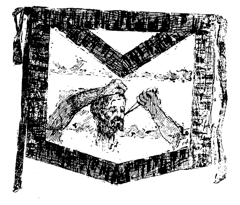

These notes are, as regards historical
matter, chiefly taken from Spanish
official documents drawn up as a
result of juridical proceedings
against certain
individuals accused
of treason. [59]
Note 2. In that period of time in
which the evil effects of freemasonry began to tell upon the public and
private life of the government officials and upon the morals of the
people in general, the Civil Governor of Manila, D. Justo Martin Lunas
(1886), gave a ball to which the cream of Manila society was invited.
Among the selections for the evening was an extravagant item, nothing
more or less than … a can-can! This in itself was enough;
but what made the matter so much the worse was that the governor had
invited the venerable Archbishop of Manila to the ball. The news of the
innovation spread far and wide, and very soon the whole city was in a
state of wild excitement. In the defense of public morals the
Archbishop deemed it necessary to issue a pastoral letter condemning
such spectacles.
Although not directed at that particular “school of
scandal”, this pastoral was interpreted by all those concerned,
as well as by the public in general, as a severe [60]lesson
for Sr. Lunas and those who had gathered in the government house to
dance the can-can or to take pleasure therein. Hence Sr. Luna and his
party considered themselves
offended, and did not hesitate to take revenge when an opportunity
occurred, upon the aged and infirm Archbishop who did all he had done,
in defense of the morals of his flock.
From this event sprung the seed which gave rise, later on, to the
famous, or rather infamous manifestation of ’88: an
insensate campaign inspired against the Religious Orders by these
offended ones and their followers (See note 30).
The Civil Governor at that time was D. José Centeno y
García an active propagator of freemasonry, holding the 33rd
degree. He, together with Sr. Quiroja, fostered and godfathered the
“manifestation”. In this semi-official insult to Archbishop
Payo, an insult so ably analysed by Sr. Retana1, we have one
of the best examples that could be furnished of the methods adopted by
the masonic enemies of the Catholic [61]faith in this archipelago. This
manifestation, fostered by a governor who drew down upon himself the
righteous ire of all honorable men and women by reason of his
protection of the houses of ill-fame in and about the city, was a truly
masonic invention by which many, in fact some 98% of those who signed
it, were grossly deceived. The following notes taken from the analysis
of Sr. Retana, will give an idea of the real value of the
“manifestation” and the part the people had therein.
In the Suburb of Sta. Cruz there were 144 people who signed the
document, that is to say there were 144 names. Of these no less than 56
were unknown, 3 were minors and 3 did not recognize their
signatures; 52 were natives and 8 were Chinese half-castes. In
Sampaloc: 61 signatures, all of which were of indians none of whom
followed trades or professions which necessitated the use of brain
power. In Malate: 38 signatures, 31 of indians, only 15 of whom understood Spanish. In
Binondo: 41, 31 of whom were indians; five minors. In Sta. Ana, out of
104, the number of minors was 14, and 50 did not
understand Spanish; 66 were indians. In Caloocan: [62]80
signatures of which 55 were indians who did not understand Spanish; 38
were laborers, 7 were minors. In Navotas: 140 signatures; 49 laborers,
and 49 fishermen; 127 did not understand Spanish. In Mariquina: 68, 38
of whom were laborers, 51 did not understand Spanish. In San Fernando
de Dilao (Paco): 35; 6 minors and all indians. In San Mateo, 50
signatures;
39 laborers,
45 indians, 41 of whom did not understand Spanish. In San Miguel 49;
and here comes the crowning piece of the magnificent work, for of these
49 no fewer than 16 had died! yes died previous to the
drawing up of the document and therefore could not possibly have signed
it; moreover 7 did not recognize their signatures, and all were
indians.
In recapitulation; there were 810 signatures; of these 85 did not
declare on examination, 56 were unknown, 39 were minors, 22 did not
recognize their signatures and 16 had died previous to the drawing up
of the document (Feb. 20th 1888). This brings the 810 down to 592. Of
these 592 signatures 208 were of laborers, 50 of fishermen, 31 of
carpenters, 7 washermen and 5 barbers: a total of 301 persons whose
[63]occupations called for no particular amount of
education, and whose interest and concern in such a movement as this
may be judged from their social standing. Deducting these 301 from the
remaining 592 we have 291 left for further analysis. Of these 25 were
of tailors, 4 singers (!) and 3 school masters; 58 escribientes whose occupation it is to make clean copies of
documents and other manuscript, the most that can be said of the
majority of them being that they can write well, not an uncommon thing
anyhow for a filipino; 11 of musicians, men who lead the life of
crickets, enjoying hunger by day and noise by night; 9 type-setters,
men who after having set a dozen columns of material could not tell you
anything of the subject they were composing, in other words, men who
like the escribientes reproduce mechanically without
knowing what they are reproducing; this gives us 107 of another grade
leaving 184 to be divided among the many odds and ends of occupations
followed by the native to earn his “fish and rice”. No less
than 384 of the number did not understand Spanish and 13 could not
write. In the matter of races: ONE was a Spaniard, Enrique Rodriguez
[64]de los Palacios who called himself a merchant and
was domiciled in Binondo. Upon investigation it turned out that he also
had been fooled and that he had signed the protest because he had been
told that other Spaniards had also signed it; as to its contents he
affirmed that he knew nothing. One was a Spanish mestizo, 66 were
Chinese half-castes and 524 were indians. So much for the famous
manifestation which resulted in giving a most decisive blow to the
moral and social standing of those who prepared and those who signed
it. Those concerned therein learned the bitter lesson that “they who
dig pits for their neighbors are apt to fall therein
themselves.”
The common opinion has always been that the document in question was
drawn up by Doroteo Cortés (see note 11) who had on several
occasions been under police vigilance; had been expelled from Navotas
and compelled to reside within the walled city, later on pardoned, but
still kept under police surveillance. But however that may be, the
document was infamous in the extreme, and was the precursor of the
modern campaign against the [65]Religious Orders. From that time to
this present, this campaign has continued to spread, and is still being fostered
by the Federal Party.
Another of the advanced ideas which saw the light of day during the
interim governorship of D. José Centeno y Garcia, a 33rd degree
freemason and a stout republican, was the toleration, for the first
time in the history of the Archipelago, of houses of prostitution.
Centeno was a governor who, having erred considerably during his
governorship, attempted some years later to regain public confidence by
the publication of an insulting pamphlet against the Religious Orders.
This novelty of semi-official houses of ill-fame was, for Manila, a
most genuine expression of modern democracy. Scandals until then
unheard of or undreamed of in Manila, became the order of the day.
White girls imported or inveigled, were hired out by their
mistresses to pander to the sensual appetites of blacks, merely because
the said black-skinned sensualists were wealthy enough to pay the price
demanded. What edification! Fundicion street became a centre in which
the scandals daily increased in number and importance. [66]The
native weaned after many long years of careful training at the hands of
the Religious Orders, from the vices in which he was found submerged at
the time of the Spanish Conquest, was brought face to face with the
same scandalous surroundings, introduced by people of the same white
race which had removed his forefathers therefrom. Gradually but surely
this leaven of corruption has eaten its way into the customs of the
people, and to-day we are witnesses of its terrible effects. A
comparison of the public morals of to-day with those of 20 years or so ago, would reveal facts
which would astound many of those who are at a loss to account for the
reason of the existence of the “querida” evil among so many of the Filipinos of modern Manila. A quarter
of a century ago Manila was a paradise to what it is to-day, crimes so
common in these days that they are scarcely worth recording, were
unheard of; and even drunkenness was almost entirely confined to
foreign sailors. What Manila is to-day it owes to the advanced and anti
religious ideas introduced by freemasonry and modern democracy.
[67]
Note 3. Separatism, vulgarly called
filibusterism, has always, in the Philippines, been marked by
essential characteristics. It was always,
under the circumstances by which it was surrounded, necessarily
anti-patriotic. One thing which helped to give it the robust life it
enjoyed among the middle class of people, was the supposition of the
existence of a Tagalog civilization anterior to the discovery
of the archipelago by the famous Magallanes. This fantastic doctrine
was preached and propagated principally by two of the more prominent
Filipinos, Pedro
Paterno and José Rizal. The former, much less cultured than
Rizal, was the one to whom the most insensate ideas on this subject
were owing, and this because although Rizal upheld the idea, he was led
to do so by his perverse character rather than by his belief; whilst
Paterno really believes in this pre-Spanish civilization, and that to such a
degree that many of his own country-men call him a fool and ridicule
him. Another essential mark was the enmity demonstrated against the
Religious Orders. But few, if any at all of the propagators of the
doctrines of separatism labored outside of the [68]four
walls of the masonic lodge room. In other words they were freemasons.
Masonry was to them a medium through which they might carry on their
conspiracies; it was an excuse for the creation of the spirit of
association, till then unknown in the Philippines.
The aims of separatism may be classed as direct and indirect. The indirect
aim was the independence of the country from the yoke of Spain. At the
best this idea of independence was but second hand, a lesson learned by
heart by a scholar whose power of thought was insufficient to enable
him to grasp the true meaning of the words of the lesson. The
average Filipino lacks the sentiment of nationality;
hence in the minds of the majority of the people independence is but
the enjoyment of the unbridled liberty to do as they please, in fact to
revert to the times of their ancestors when everyone who could exert an
authority was a king, a prince or a ruler of some description. To the
Filipino it is of
little importance whether his sovereign or his supreme ruler be the King of
Spain or the President of the U. S. of America, as long as he is
protected from his “friends” and from his own country-men
and may enjoy [69]his cock-fighting and have the necessary supply of
rice and fish for his daily sustenance.
The direct aims of the separatists were those they sought in public,
viz: representation in the Spanish Cortes, the expulsion of the
Religious Orders, etc., etc. The result of representation in the Cortes
would have been a veritable comedy; that of the expulsion of the Friars
a decided tragedy for Spain, in as much as the
Religious was ever the backbone of the administration of the colony.
The consequences of the independence of the country would have been
equally disastrous. There would have been the
tremendous preponderance of the black over the white and eventually
inter-tribal disputes and even armed
struggles for the mastery. This would entail the complete stagnation of
the moral and material progress of the people, who would gradually but
surely drift back into the savage ways of their ancestors. And at last,
who knows but that Japan or perhaps China would have to step in to save
the inhabitants from becoming cannibals.
This doctrine of separatism was the doctrine disseminated by
Filipino masonry, a
daughter of Spanish freemasonry. Filipino [70]freemasonry however, was
to a great extent addicted to views not held or sustained by the
Gr∴ Or∴ Español, and hence did not make common
cause with Universal Freemasonry, although it used its ritual, its
signs and its name, to shield from public view those of its labors
which could not be allowed to see the light of day. Hence the diving
into the subject of Universal Freemasonry is somewhat irrelevant to
our present study, suffice it to say that the brotherhood, universal as
it is, suffers no other division than that into families. Its aim is
one; its methods one; its doctrine one2;
[71]it is the worldly imitation of the unparalleled
Catholic unity of divine foundation.
The Spanish family was founded in 1811 [72]by the Count de
Grasse-Tilley. On the 21st of February 1804 the Supreme Council of
Charleston issued a circular to the Count in which it said among other
things which demonstrate the aim of the foundation: “Above the
idea of country is the idea of humanity”; “frontiers are
capricious demarcations imposed by the use of
force.” And others of the same nature.
When the Count set forth to found the Spanish Supreme Council he was
armed with a letters patent issued by the Supreme Council of Charleston
containing this sentence: “the masonic solidity will never be
effective whilst the brethren do not recognize one only power, as is
one only the earth we inhabit, and one also the horizon we
contemplate …. To unify, therefore, the masonic labors we
all journey to the one end to which the work of this Supreme Council is
directed, and hence what we have pointed out to Spain as one of the
points in which is more necessary than elsewhere the one direction
to which we refer.”
In 1882 Spanish freemasons were divided into different Orientes each
of which claimed continuity with the institution of Grasse-Tilley;
[73]the matter was finally settled by the Supreme
Council of Charleston.
Opinion is divided on the question of the responsibility of the
Spanish freemason lodges or rather the ruling “Oriente” for
the beliefs and practices of their filipino brethren. That they were
indirectly responsible is more than certain; and oft-times they were so
indirectly. D. Manuel Sastrón ex-Deputy to the Spanish Cortes,
ex-Civil Governor of the Philippines, speaking on this subject says:
“It is not possible for us on any account to fall in line with
these suspicious reasonings: never have we had a disposition to form a
part of such a sect, because we are old time Christians; but we repeat
that we cannot believe nor do we imagine that any masonic centre
composed of peninsular Spaniards could tolerate, and much less
foment
consciously, the propagation of doctrines which, whatever masonry
brought about in the Philippines, could have given origin to the
congregation of separatist elements.”
“Nevertheless side by side with this firm conviction we repeat
what we tersely maintained, viz: that freemasonry
has been the medium which marshalled the element [74]which
generalled the Filipino insurrection. Filibusterism knew how
to exploit it to a fine point.”
. . . . . . . . . . . . . . . . . . . . .
“We do not find it inconvenient to affirm, but just the
opposite, we repeat with pleasure and absolute belief that Spanish
freemasonry was ignorant of the true ends of the Filipino masons. But it is proved to
our way of thinking, to the point of evidence, that Filipino masonry pursued no other ends than
the independence of those islands (the Philippines.)”3
It must be noted that this is the opinion of a Spanish patriot, for
a patriot Sastrón certainly was, and what is more natural than
that a true patriot should doubt the possibility of his own countrymen
mixing themselves up in anti-patriotic movements: Yet while
Sastrón and other writers would redeem their fellow countrymen
from such a stain as that of treason, I am inclined to believe that the
asserted ignorance of the Spanish freemason was too often
official, that is to say it was not genuine, [75]but
limited to the members of the society who enjoyed the privileges of the
lower degrees.
There are two sides to every question, however, and that the
“other side” may be given a fair hearing, I will quote a
declaration of Antonio Luna on this subject. Luna, among the many
statements made before the Lieut. Col. in command of the Cuartel de Caballeria, on
the 8th of October 1896, confessed that “in the year 1890 or 91,
of his own free-will, he formed a masonic project based
on Spanish masonry: a project which might, at its proper time be
applied to filibuster conspiracy. This project was discussed and
approved by the Oriente Español in Madrid; but that center did
not know the secondary ends to which it would be
applied …. Of his own free-will he manifested that his ideas
were, when he formed the project,
anti-Spanish ….”
With rare exceptions the Filipinos who left their native soil to
finish their education in the Spanish peninsula, were those to whom the
real work of separatism is owing. The Filipino at home who has fallen into line
with his foreign educated [76]brother is but a blind worker. And
the Filipino who
went to Spain was as a rule, a very general rule, taken under the
sheltering care of Miguel Morayta (see note 13). The
responsibility therefore for the ideas inculcated into the minds of
those “students” lies, and that heavily, upon Morayta, the
chief of that family of freemasonry which claims ignorance of the aims
of its filipino membership. The only logical excuse that can be brought
forwards is that filipino freemasonry degenerated. When once it took
root in the Archipelago it spread with wonderful rapidity. The adepts
were for the most part Chinese half-castes; and little by little that
strange train of thought of the native, whether he be full blooded or
mixed, a train of thought which, like the filipino pony is accustomed
to walk backwards when it should go forwards, or like the patient
carabao which too often lies down just at the moment when its
services are the most needed to drag a load over a mud hole, carried
the would-be citizens of an independent country
to the verge of political insanity. Certain it is that as the idea of
separation became more and more developed the Spanish masons who were
member [77]of the Filipino lodges severed their connection
therewith. But yet it does not appear within the limits of common sense
to believe that the Spanish masons were ignorant; the greater
probability is that they were too indulgent, too confiding. To hold too
fast to the excuse of ignorance is to profess oneself very ignorant.
But whether it was ignorance or the wanting of even that species of
patriotism which one expects to find in
beasts of burden (for every horse knows his own stables) the black fact
still remains that Spanish masonry gave birth to, and fostered,
Filipino freemasonry
or in other words, the katipunan.
However, be the degree of ignorance what it may, we cannot overlook
the fact that the actions of the Tagalog freemasons, the katipunan if you
will, for the one and the other are the same thing under different
names, were the cause of no little surprise to the Grand Oriente
Español. The filipino mason was a traitor to the mother which
gave him being and nourished him into activity: a traitor who used the
cover of the freemason lodge only that he might the easier and safer
hatch out his plot to gain, by the most brutal means imaginable,
[78]the independence of his country.
In his declaration made in the presence of Colonel Francisco Olive y
Garcia and others on the 23rd of September 1896, Moises Salvador
Francisco, of Quiapo (Manila) stated that “in April 1891 he came
to Manila bringing with him a copy of the agreements arrived at by the
Junta of Madrid, and these he handed over to Timoteo Paez to see if
masonic lodges could be established as a commencement of the work. In
the following year of 1892 Pedro Serrano arrived from Spain and then
Masonry (native) was introduced into the Philippines, the first lodge
instituted being the Nilad.”
To give some idea of the separatist aims which gave life and
nourishment to the Tagalog revolt, I will quote
a few extracts taken from masonic documents, and from the declarations,
made by persons complicated in the conspiracy. These declarations were
made in the presence of the appointed judge, Col. D. Francisco Olive y
Garcia, and others, and are of capital interest in the study of the
rise and fall of the filipino “commune”.
The citations are as follows: [79]
I. In an act of Session of the Katipunan Sur at the
commencement of the year 1896, the session being opened, the president
don Agustin Tantoko, a native priest4, invited the
membership present to [80]express its opinion concerning the questions
[81]proposed, viz: how ought we to act towards
society; towards ourselves; and how ought we to act in case of
surprise. Mariano Kalisan considered, dealing with the first question,
that “as their principal object was not to leave alive any
Spaniard in all the future Filipino republic” they should
procure to make friends with them as much as possible in order to be
able to carry out their plans with more surety when the time should
arrive to give the cry of independence. D. Gabino Tantoko, brother of
the president, considered that the said principle should be carried out
especially in dealing with the members of the Religious Orders. Both
propositions were accepted.
As regards the second question, Epifanio Ramos proposed that
meetings should be held as seldom as possible “in order to
avoid scandals”.
In case of surprise, Hermenegildo García considered that
“the strongest fort lay in denial.” The brothers
Tantoko remarked that such surprise was almost impossible seeing that
they had determined “not to leave alive any of those who might
surprise them.” The president moreover remarked that, from
that time forward, in case of [82]danger, “they should destroy
all the papers they held in their power, such as acts, receipts,
letters, plans and especially the arms they held, in case the blow they
were to deal in Manila should not succeed.” This was accepted
unanimously.
In reply to a question, the president affirmed that “all the
sections of Katipunan existing in the future Filipino republic pursued the same end: viz:
the independence of the Filipino people, the release from the yoke of
the step-mother5 Spain.”
II. In a document
dated the 12th of June 1896 and giving instructions to those who should
carry out the proposed slaughter of all the Spaniards in Manila, we
read:
“2nd. Once the signal is given every bro∴ shall
fulfill
the duty imposed upon him by this Gr∴ Reg∴ Log∴
without considerations of any kind, neither of parentage, friendship
nor of gratitude, etc.”
“4th. The blow having been struck at the Captain General and
the other Spanish Authorities, the loyals shall attack the convents
[83]and shall behead their infamous inhabitants,
respecting the wealth contained in the said convents; this shall be
gathered … etc.”
“6th. On the following day the bbro∴ designated shall
bury all the bodies of their hateful oppressors in the field of
Bagumbayan together with their wives and children, and on the site
shall later on be raised a monument commemorative of the independence
of the G∴ N∴ F∴ (Gran
Nación Filipina).”
“7th. The bodies of the members of the Religious Orders shall
not be buried, but burned in just payment for the felonies (sic) which
they committed during life against the Filipino nation during the three hundred
years of their nefarious domination.”6
This infamous document is signed by the president of the executive
commission by the Gr∴ Mast∴ adj∴ Giordano Bruno,
and the Gr∴ Sec∴ Galileo.7
III. In his declaration made before Col. Olive y García, the
second Lieutenant D. Benedicto Nijaga y Polonis, a native [84]of
Carbeyeng, province of Samar, stated that the conspiracy was entered
into for the purpose of securing from Spain, by peaceful means, or by
the process of revolution, the independence of the country. He affirmed
moreover that, in the case of revolution, the aid of Japan was to be
sought
and that the co-operation of the native troops was
expected: and that the plan of campaign of the rebels who were in San Mateo,
was to “fall upon Manila”, the native infantry sent out to
meet the attack to pass over to the rebel ranks.
IV. In his declaration made in Manila before the same judge, Pio
Valenzuela y Alejandrino stated that he was one of the members of the
Interior Supreme Council of the Katipunan,
the aim of which was to collect a large amount of money and promote a
general rising in order to declare the independence of the islands
under the protectorate of the Empire of Japan. Further on he stated that the rising was to have
taken place at 7 o’clock p. m. on the 29th of August, entry being
made into Manila and its suburbs, the rebels “killing the
Spaniards, and the natives and Chinese who did not wish to follow them, and
then devoting [85]themselves to the sacking of the town, to robbery
and incendiarism and the violation of women.”
V. Romualdo de J., sculptor of Sta. Cruz, Manila, declared that he had
founded the Katipunan in 1888, the year in which the manifestation
against the Archbishop was made; he defined the aim of the society to
be “the killing of all the Spaniards and the taking
possession of the islands.”
VI. In his declaration made in Cavite, September 3, 1896, Alfonso Ocampo
affirmed that according to the plans formulated, they were “to
make the assault, killing and robbing all the peninsular Spaniards.” And moreover, that
“the rebellion had for its object the assassination of all the
peninsular Spaniards, the violation and beheading afterwards of their
wives and of their children even to the youngest.”
Many others might be cited; with these six samples an idea may be
gathered of the progressive idea advocated or fostered by Rizal, Pilar,
Lopez, Ponce, the Lunas, Rosario, Cortés, and others who were
inspired by Morayta, the Grand Master of the Gran Oriente
Español. [86]
Note 4. The then Civil Governor of
Manila, in a report to the Colonial Minister concerning what was taking
place in Manila says, speaking of this Corps:
“… this Corps of Vigilance which, although composed of
no more than 45 persons including the inspectors of the same …
renders a service (to the Government in secret service work) which
should be confided to 100 persons, considering the nature and the
amount of the work undertaken and performed daily, from the day of the
formation of the Corps to this day: a period of about a year. The
interesting body of police which under my orders has performed such
valuable services, is that which has attained greatest success in the
fruitful labor of making clear the vandalistic events we have been
experiencing.”
Note 5. Filibusters: more
properly called separatists. Noah Webster describes a filibuster as a
“lawless military adventurer, especially one in quest of plunder;
a free-booter, a pirate.” Hence, taken in its true meaning, the
word does not apply to the separatists of the Philippines. Retana
classifies the filibuster in three groups: the first: he [87]who,
thinking little or nothing of the independence of his country, showed
more or less aversion to the peninsular Spaniards. 2. He who, under the
pretext or without it, of illustrating his countrymen, inculcated into
their minds political ideas which, without meriting the qualification
of subversive, tended to incite them against supposed oppressions of the
Spaniards; against all things which appeared behind the times, hence
according to their way of arguing, against the Religious Corporations,
to which they owed everything except their anti-Spaniardism. As a rule
those belonging to this group professed great love for the
mother-country and did not preach ideas of independence; they held the
belief that theirs was the duty to prepare the way for the emancipation
which should be attained by their grandchildren. And 3. Those whose aim
was to attain the emancipation of their country as soon as possible.
This latter group were the true separatists. It is however difficult to
distinguish between the filibuster so called, and the true separatist;
perhaps the only admissible distinction is that the
separatist is a man of peaceful methods whilst the [88]filibuster is a man of struggles. Rizal was more
or less a separatist, Andrés Bonifacio a veritable
filibuster.
Note 6. Sr. Olive was a gentleman
who well deserved the respect and honor paid to him by his nation, and
the hatred of those whose plans of treachery he thwarted and who, in
spiteful revenge, have gone so far as to accuse him of using torture
and other forcible means of extorting confessions, many of which they
claim to have been false. Sr. Olive was too kind-hearted a man to stoop
to such methods even had the circumstances demanded the use of moderate
physical persuasion.
At one time Sr. Olive was the Governor of the Marianas Islands
concerning the which he wrote and published a very interesting memoir.
He was at that time Lieut. Colonel.
Later on he was made Colonel and as such was placed at the head of
one of the sections of the Guardia Civil of Manila. He was secretary of
the sub-inspection of arms of the Philippines. When a state of war was
declared, the charges which were at that time being prepared in
connection [89]with the insurrection, were handed over to Sr.
Olive, who with a zeal worthy of praise, and an energy too seldom
exerted, commenced to deal out strict justice to the enemies of their
country. About a year and a half ago Sr. Olive was made General of
Brigade.
Note 7. According to a pamphlet
written by a pseudonymous freemason and printed in
Paris in 1896, the first lodge founded in the Philippines was that
established in Cavite about 1860 under the name of Luz
Filipina and subject to the Gr∴ Or∴ Lusitian,
enjoying immediate correspondence with the Portuguese lodges of Macao
and Hong-Kong which served as intermediaries
between that lodge and those of other neighboring countries.
Another statement however, from the pen of Sr. Nicolas Diaz y
Pérez who formed his data from the original documents of the
lodges, places the first foundation at the end of the year 1834. At
this time, says Sr. Diaz, D. Mariano Marti, who died twenty-seven years
later, whilst on his return to Spain, founded, together with others,
lodges in various parts of the Archipelago, but they did not prosper
and soon dissolved. [90]The epoch of intrigues which produced so much
disquietude and perversion of moral customs and ideas, more especially
in the Tagal provinces, commenced about 1868. The masonic activity at
that time was owing greatly to the political intriguers who were
deported from Spain to this archipelago, where their influence was felt
in no small degree, to the detriment of public morals.
About 1872, during the interim government of Gen. Blanco Valderrama,
a lodge was founded in Sampaloc, subject to the Gr∴ Or∴
Esp∴, and composed entirely of peninsular Spaniards with the
exclusion of natives.
In the same year D. Rufino Pascual Torrejón reached Manila
and united his efforts to those of Marti, founding lodges purely
Spanish.
On the first of March 1874 was created the lodge “Luz de
Oriente” under the obedience of the Gr∴ Or∴ de
Esp∴, the Gr∴ Comend∴ being D. Juan de la Somera.
This was really the first successful establishment of masonry in the
Philippines. The cited Sr.
Diaz y Pérez says on this point; “It may be said that
freemasonry regularly constituted in the Philippines, dates from
[91]the 1st. of March 1874, with the creation of the
lodge Luz de Oriente….”
On the 1st of March 1875 was installed the Gr∴ L∴
Departmental, D. Rufino Pascual Torrejon being the Gr∴
President.
Up to the year 1884 the lodges of the Philippines did not admit to
their membership either indians or half-castes;
but since that time, and upon the initiative of the Gr∴
Mast∴ of the Gr∴ Or∴ Esp∴ the doors of the
lodges were opened to all indians and half-castes who could read or
write. Later on purely native lodges were founded and from that time
Spain lost, little by little but surely, her hold upon the people, with
the result that she eventually lost her colony. What masonry has
accomplished in other parts of the world it also accomplished here very
effectually. It laid the foundation for the undermining of society,
bringing forth a generation of traitors and building up a kingdom for
anti-Christ.
As has been proved over and over again by the many masonic documents
which have been discovered, freemasonry was ever anti-Catholic in the
Philippines; but it was not until it had degenerated into filibusterism
[92]that the anti-Spanish spirit really took shape.
Year by year this spirit spread and more, especially
among the natives and half-castes of less intellectual capacity. Among
this element, separatist ideas spread with marvelous rapidity owing to
the peculiarity of the character of the native and of the half-caste,
more especially the Chinese half-caste. (See note 19).
Up to 1890, even Filipino masonry enjoyed but insignificant
development. By 1892, however, it had spread widely, and in the
following year Manila was gifted with a female lodge founded on the
18th of July of that year, under the name of “La Semilla”,
of which Rosario Villareal, the daughter of Faustino Villareal, was declared
the Ven∴ Gr∴ Mistress.
From this time the element of politico-social decomposition gained
ground among the native and half-caste population. New ideas
continually gave place to the old and as the aims and purposes of the
lodges degenerated, these centers of anti-catholic propaganda became
more and more anti-Spanish.
Isabelo de los Reyes, in an attempted defense of his
“friends”, makes the important [93]confession that “Filipino freemasonry was
not so inoffensive as it was believed …. The
“Liga” at least was a school of conspiracy, and in truth,
the Filipinos did
not turn out bad pupils.”
Another demonstration of the inoffensiveness of freemasonry is the
following series of facts taken from a pamphlet published in 1896 in
Paris by Antonio Regidor under the pseudonym of Francisco Engracio
Vergara. Regidor was a distinguished figure in the attempted revolt of
1872, and hence may justly be supposed to know something of the matter
of which he speaks. He says:
“By reason of the rising of Cavite many Filipinos characterized as
progressives were deported to Marianas…. To the masons of Hong-Kong
was owing the flight of several Filipinos….”
“The foreign masons distributed arms in Negros, Mindanao and
Jolo. The official bank of Singapore distributed in Cebu, Leyte and
Bohol over £80,000 stg., and that of Hong-Kong more than
£200,000 in Panay and Negros ….
The French freemasons at the petition of brother Paraiso, went
to aid also the escape of the deported in Marianas.” [94]
Note 8. Rizal and others: Of this group
Rizal, Pilar, the Lunas and Cortés, formed the more guilty part,
they being men of superior education and more enlightened minds. Rizal
was the center upon which almost everything connected with the revolt
turned. During his younger days he lived with his parents in Calamba,
where they occupied a stretch of land owned by the Dominican
Corporation. The Rizal family was one of those most favored by the
Dominicans8, and one of those ungrateful ones too, which
commenced law-suit against the said Corporation to unjustly possess
themselves of the land they held at rent.
Rizal received his secondary education at [95]the
Ateneo Municipal conducted by the Jesuit Fathers, and was always a
bright attentive and successful pupil. At that time he was secretary of
the Sodality of the Blessed Virgin and Promoter of the Apostleship of
Prayer. Whilst he remained true to the traditions of Catholic Spain, he
was an upright pious youth. Much of his time he spent in carving wooden
images of the Blessed Virgin and of the Sacred Heart, and in writing
compositions, some of them remarkable for their beauty, in which were
reflected a pure love for Spain.
Having attained the degree of Bachelor he left the Ateneo and passed
to the University of Manila, continuing his studies under the Dominican
Fathers. There he studied medicine with great success for some years,
and at length went to Europe to terminate his career and take his
degrees.
Rizal left school like so many other filipino students, overloaded
with science he was unable to direct, full of pride because of his
accomplishments, and very ambitious. He terminated his studies in
Madrid and Germany, in both of which places he fell in with a class of
people who utilized him as a tool to accomplish an end at that time
[96]unknown to him. They filled his head with new and
false ideas, making him vain promises which appealed to his pride, and
by their dark arts made of him a separatist. He also studied
English and German, his studies in this latter language making him
enthusiastic in the things of Germany and, in an extraordinary degree,
with those of protestantism.
Among his own people he was the possessor of an exceptional
intelligence and talent but outside his own circle his most famous
accomplishments are but poor to the student of Literature. His sadly
famous Noli me tangere and El
Filibusterismo cannot pass for more than very second-hand for their
ingenuity and literary taste, but they possess the quality of being a
mirror in which is reflected the inclinations, character and perverse
moral sense of their author. In them he is reflected as a restless
spirit anxious for human glory, haughty and above all, anti-Spanish and
ungrateful in the extreme.
It was in Berlin that he published his Noli in 1886. That
this novel was written by Rizal there in no doubt, but that the ideas
therein expressed came directly from [97]his own head is more than
doubtful. Like the vast majority of Filipino productions, it is but a copy taken
from models which had struck the fancy of the author. The pictures he
draws therein of the disadvantages suffered by the Filipinos who have become
españolized, are but reproductions prepared in his own coarse
and crude way of thinking, of the most scurrilous anti-Spanish and
anti-Catholic works of propaganda produced by the Bible Societies and
spread abroad throughout the world as gospel truth. Taking away the
insults hurled against the Church and the Religious Orders, and against
Spain, there is absolutely nothing new in the novel. Its object was to
attack the friars and the chiefs of the Guardia Civil, both of which
the author well knew to be the sustainment and guarantee of peace and
order in the Archipelago and consequently the strongest support of the
Spanish sovereignty in the Philippines, a
sovereignty he wished to overthrow. To a reader whose library consists
of a half a dozen books of insignificant literary value, the
noli of Rizal is a masterpiece; but to the reader who has seen a
book with a cover, who has had some experience [98]of that
portion of the world which lies outside the limits of the town of his
birth, and who is gifted with more or less ability to think for
himself, and sift the wheat from the straw in a literary composition,
noli me tangere is but a half-tone picture cut from a newspaper
and colored with water-colors by a … school-boy.
Towards the end of 1887, Rizal returned to the Archipelago,
remaining about two months, during the which he made active propaganda
of the ideas and fancies he had picked up in Europe: ideas which he
himself could not really understand.
In February 1888 he left Manila for Japan, from whence he returned
to Europe, living for a while in Paris and later on in London.
In 1892 Rizal, relying upon the generous character of D. Eulogio
Despujols, the then Governor General of the Archipelago, decided to
return to Manila. From Hong-Kong where he was then residing, he
wrote to the governor, asking permission to return to his home; the
Governor replied by means of the Spanish Consul at Hong-Kong, that he had
no reason to prohibit him from returning, and that he could do so when
it so pleased him, providing he came with [99]no intention to disturb
the peace then reigning in the Islands.
This Rizal lost no time in doing; he arrived together with his
sister. The baggage of both was carefully examined and in one of the
trunks was discovered a bundle of leaflets in the form of anti-friar
proclamations which indicated the bad faith of a traitor. These were
handed over to Despujols unknown to Rizal. The Governor preserved them
in his desk for future reference. In an interview with the Governor,
Rizal begged pardon for his father who was under sentence of
deportation for certain events which had taken place in Calamba; this
was granted him without reserve.
Our hero soon forgot the aims he professed to the Governor; instead
of thinking about his folks and making his arrangements for the
colonizing scheme he professed to have worked out in Borneo, he set to
work to stir up disrespect towards the authorities, and the spirit of
political unrest. He together with Doroteo Cortés and
José Basa were the objects of careful vigilance on the part of
the secret police.
After a few days a prolonged conference took place between the
Governor General [100]and Rizal. During this conference the
latter made patent his political feelings, at the same time making
protestations of respect for Spain. His political programme however was
not in keeping with his protestations of patriotism, and this fact so
angered Despujols, who now saw that Rizal’s idea was to fool him,
that he took from his drawer the proclamations discovered in the
agitator’s baggage and thrusting them under the nose of the traitor,
said:
—And these proclamations; what are they, what do they
mean?
Rizal taken by surprise and confounded, cowardly declared that they
were the property of his sister, a declaration which only enraged the
General the more, and he ordered his detention in Fort Santiago; on the
following day he decreed his deportation to Dapitan.
Whilst in exile his opinion and advice were sought concerning the
advisability of immediate armed rebellion. But he, crafty, more or less
far seeing and, above all, jealous of Bonifacio’s increasing
ascendancy over the people, refused to countenance the idea. Granting
the unselfish desire he professed of seeking merely the independence
[101]of his country, Rizal’s jealousy was justified.
Bonifacio’s one great idea was the presidency;
Rizal’s: the honor and glory of having prepared the way for, and
eventually, by his labors accomplishing his country’s deliverance
from what he was pleased to call the oppression of the Spanish Government.
Had such oppression existed, Rizal’s idea would
have been worthy of classifying as noble. George Washington well deserved
the name of the “Father of his Country,” for he, laying
aside all selfish aims and desires, led a handful of men against a
horde
of mercenaries sent by a cruel monarch who oppressed his people, not
only in the colonies but in the mother-country also.
Washington was a man who deserved and received the respect of those
against whom he fought, for he fought for a principle. Such an honor
never has, and never can be received by Rizal from his own countrymen.
The campaign Rizal fought was inspired by and worked out in the
freemason lodges which used our “hero” as a willing tool.
Rizal was a Filipino
Garibaldi, never a Filipino Washington, and hence the honors
paid to his memory as a “patriot” must emanate from the lodge
rooms which made [102]him what he was, and not from the people of
his country.
In Dapitan the Filipino agitator was not inactive. On one
occasion he directed a letter (which never
reached its destination on account of its having fallen into the hands
of Spanish authorities) to the Capitan Municipal of the province of
Batangas, giving him information of the work of filibusterism which was
at that time being carried on.
Rizal, tiring of his position in Dapitan, eventually asked
permission of the Governor General, Gen. Blanco, to be sent to Cuba as
physician to the Spanish forces there. Blanco agreed to the proposition
and ordered his return to Manila in preparation for the voyage to
Spain, where he was to be sent and placed at the disposition of the
Minister of War.
From Spain came word, however, that the petition could not be
accepted; and for a very good reason. Rizal’s idea of becoming an
army surgeon, was a manifest pretence, his real aim was to aid the
separatist movement there, if he ever got there, but primarily to make his
escape at an intermediate port, Singapore probably, if opportunity occurred.
Moreover, it having come [103]to the ears of the authorities
that certain people of Pampanga and Bulacan were preparing a reception for
the agitator, the Governor ordered that he should not be allowed to
leave Dapitan, and that should he have left there, he should not be
allowed to land in Manila on his arrival, but be transferred to another
ship which should carry him back to Mindanao. It happened that he had
left Dapitan on board the S. S. España, and in due time he
arrived at Manila. At 11 a. m. on the 6th of August the ship on which
he came anchored in the bay and everyone landed except Rizal. A
lieutenant of the Veterana went aboard and took possession of the
person of Rizal, holding him as a prisoner till 7:30 p. m., at which time,
through an error in the delivery of an order, he was allowed to
disembark. This he did in company with his sister Narcisa, and they
made their way to the office of the Captain of the Port and later on to
the Comandancia of the Veterana. His sister not having been under
sentence of deportation, was allowed to go to the home
of her relatives.
During the evening of the same day Gen. Blanco gave a reception at
Malacañang at which were present the Archbishop [104]of
Manila, the Illust. Sr. Bernardino Nozaleda; Sr. Echaluce; Sr.
Fernandez Victorio, President of Audiencia; Sr. Bores Romero, the Civil
Director and others. During the reception Gen. Blanco received a
telegram from the Governor of the province of Batangas stating that in
the pueblo of Taal, in the house of the brother of the
filibuster Felipe Agoncillo, had been discovered a quantity of
arms and ammunition, among other things being 10 revolvers, 10
winchesters, 10 other guns, a case of
explosive bullets, a quantity of dynamite, a Japanese flag, another
composed of red and blue with a representation of the sun in the center
surrounded by seven stars—the flag of the future
Filipino republic.
Blanco realizing the importance of the news, formed a committee from
among those present, choosing those who were members of the Junta
of Authorities, to take steps in the matter. Orders were immediately
given that Rizal should be placed on board the cruiser Castilla which
was stationed at Cavite; this was carried out, the start from Manila
being made at 11 p. m. the same night. This action was considered
necessary, in as much as the news of the landing of [105]Rizal spread fast and caused no little stir
among his followers.
Whilst Rizal was on board the cruiser Castilla which was awaiting
orders, the Katipunan revolt broke out in Manila and the suburbs. Very
soon afterwards his voyage Spainwards was commenced on board the S. S.
Colon, the insurrection becoming more and more wide-spread daily. On
finding to what an extent Rizal was complicated in the work of the
revolution, his return to the Archipelago, as a prisoner, was demanded,
and so our “hero” returned to be judged as were so many of
his fellow agitators, for the crimes for which he was morally and
physically responsible.
A council of war was constituted under the presidency of Lieut. Col.
Tabares, Capt. Tavil de Andrade taking charge of the defense of the
prisoner. The accusation preferred against him was that he was the
chief organizer of the revolution. The trial took place in the hall of
the Cuartel de España in the presence of a large audience among
whom were his sister and the woman with whom he had been living in
Dapitan. The charge having been read out, several declarations were
made by Rizal, [106]some before his voyage to Spain and others since
his return were also read. During his trial Rizal denied the knowledge
of several persons who were his intimate friends and co-workers; among
them Maximo Inocencio and Mariano Linjap, and others with whom he had
been in almost continual communication. He denied knowledge of the
“Liga Filipina” stating that not only did he not found it,
but that he was not aware of its existence. He affirmed ignorance of
who Valenzuela was, and almost immediately afterwards stated that he
had held an interview with him in Dapitan when that individual had been
sent there by Bonifacio to consult him on the subject of armed
rebellion. Throughout the whole trial he pursued the same tactics,
proving that, of himself, he was but an ordinary Filipino indian who, when left to
himself to stand on his own merits, gave no signs of particular
judgement or power of thought. The Filipino on trial, even for some significant
affair, cannot tell a lie to advantage: Rizal was no exception even in
this. The trial being ended he was condemned to execution.
Previous to meeting his death he confessed and received the Holy
Communion from [107]the hands of the Jesuit Fathers having after
long consideration, made the following retraction of his errors:
“I declare myself Catholic and in this religion
in which I was born and educated I wish to live and die. I retract with
all my heart all my words, writings and actions that have been contrary
to my condition as a son of the Catholic Church. I believe and profess
whatever She teaches and I submit to whatever She demands. I abominate
masonry as an enemy of the Church and as a society condemned by the
Church.
“The diocesan prelate, as superior ecclesiastical authority,
may make public this spontaneous manifestation, to make reparation for
the scandals which may have been caused by my works, and that God and
my fellow-men may pardon me.”
“Manila 29th December 1896.—José
Rizal.—Witnesses: Juan del Fresno, Chief of Picket.—Eloy
Maure, Adjutant.”
He also entered the holy bonds of matrimony with the young woman
with whom he had been living for some time in Mindanao. On the way to
the place of his [108]execution he remarked to one of the Fathers
who accompanied him. Father, it is my pride that has brought me
here.”
Of the political error committed by the Spanish Authorities in the
execution of Rizal, I do not hold myself up as a judge. All
governments, like human beings, commit mistakes and at times grave
ones. The Spanish authorities, feeling themselves justified in so
doing, ordered the execution of the prisoner who was responsible for one
of the most bloody revolts since the time of the French revolution: the
pattern taken by the Filipino leaders, for the means of the
foundation of the Filipino republic. Rizal was executed on the
Luneta. To assert that he was offered up as a victim to gratify the
wishes of the Religious Orders is but a crude and vicious argument
worthy of its inventors and propagators. Nothing, absolutely nothing,
can be brought forward to prove such an assertion, but on the contrary,
those members of the Religious Orders who concerned themselves in the
stirring affairs of the revolution were, as a very general rule,
opposed to harsh and extreme measures being taken; and among these was
the Illustrious Archbishop of Manila, [109]Sr. Nozaleda, a
noble, tenderhearted and compassionate prelate, a prelate who has been dubbed by
Foreman as “the blood-thirsty
Archbishop”.
Had the friars held the reins of government as they are stated to have
done, history would not have to record the names of so many, many
people who were executed: people who were scarcely to be
held as guilty, in as much as they were but sheep who thoughtlessly
followed their shepherds without even looking to see where the road
they trod would lead them.
In politics Rizal had his party composed of a number of
insignificant petty-lawyers, petty-doctors and others possessing
academic titles and a semi-formed cerebral power. These were backed by
a mass of the people of Calamba, Rizal’s birthplace. In their
eyes he was a “Messiah”, a “Mahdi”, their prophet and
redeemer. As an individual he was bright and intelligent, and had he
not been led astray by those who made a “cat’s paw”
of him, and who cruelly deserted him in his hour of need, he would
doubtless have been one of the foremost Filipinos of to-day in that sphere of life
in which God had placed him.
A Spanish proverb says: “In blind man’s land the one eyed
man is a king.” Rizal was a king. [110]
Note 9. Marcelo Hilario del Pilar y
Gatmaytan was a native of Bulacan. He was, by profession, a lawyer, and
had been enabled to complete his studies in that direction through the
good offices of the Augustinian Fathers of Manila, who had given him
the money necessary to matriculate and to pay the cost of his title of
“abogado.”9
Pilar left Manila for the peninsula about the end of ’88 for
fear of deportation: a punishment at that time staring him in the face.
He was one of the earliest workers on the “La Solidaridad”,
the official organ of Filipino freemasonry in all its sections. He
later on became its director.
Pilar was another of the many malays whose ways were beyond human
comprehension. Spaniards who have lived a life-time among the indians
and studied them carefully from all points of view agree that the
deeper one studies the native character the more incomprehensible it
becomes. That is, the study of the average filipino: Pilar was one of
the average. He was not gifted with the education enjoyed by Rizal, nor
was he such a stupid visionary as Pedro Paterno; he possessed touches
of the character of both. [111]
Like so many of those Filipinos who fed at the hands of the
Religious Orders, he eventually turned to bite the hand that fed him.
As in the case of the others who had done the like, he did so, not
because he had cause to, but because he fell, as did they, under the
evil influence of those who utilized them to work out their schemes of
treachery.
Pilar was sent to Spain as a delegate of the Committee of
propaganda. Owing to this position of chief of the delegation in
Madrid, and by reason of his intimate friendship with Morayta, he
occupied a position from which neither Rizal nor even the whole of the
progressive indians combined, could drive him. He held, for some
time, high office in the Gr∴ Or∴ Esp∴ as will be
seen from the following clipping taken from page 107 of the Annual of
that Orient for the year 1894–95.
“GRAN CONS∴ DE LA ORDEN
1894–1895
Muy Ven. Gran Maestre Presidente
Ven. H. Miguel Morayta y Sagrario, Gr∴ 33
……………………………..
Ven. Gran Orador Adjunto
V. Marcelo H. del Pilar Gr∴ 33” (h∴
Kupang)
It was Pilar who conceived the plan of [112]the Katipunan; and
yet after all it was not his conception, for the scheme he formed was
at the best, a piece of patch work made up of the plans worked out in
the various revolutions which had taken place in some part of the
world.
What Pilar’s ambition was, it is hard to say; from his actions
and writings one is almost driven to the supposition that he had none
in particular, but was led to the separatist labors he performed by
force of compromise.
When the time was ripe for action Pilar determined to leave Madrid
and make his way to Japan. He commenced the journey arriving at
Barcelona, from whence he was to make his way east. There, however, he
was taken suddenly ill, and died on the 4th of June 1896, in the
Hospital of that city.
In many things Pilar was superior to Rizal. Unlike that agitator,
Pilar was not a sneaking, skulking petty-politician; he was
straight-forward and had the courage of his opinions. What Pilar would
have done if placed in the same circumstances as Rizal it is hard to
say, but we may be assured that he would not have acted the coward as
did Rizal. [113]
Note 10. Antonio and Juan Luna were
two of four brothers. The former was a bacteriologist, the
latter an artist who at one time, whilst he followed the instruction,
and remained under the guidance of his master, showed no little talent.
Antonio went to Spain in ’88, and later on passed to Paris where
he lived with his brother Juan who supported him. There he devoted
himself to the study which made him famous; this he did in the
laboratory of Dr. Roux. He became an
assistant editor of the Solidaridad, the official organ of
filipino freemasonry, and wrote many vicious articles in its columns
over the pseudonym of Taga-Ilog. As a member of the freemason fraternity he was
known as Gay Lussac.
On his return to Manila he established, for a livelihood, a school
of fencing, and like the vain, insensate “magpie in borrowed
plumes” that he was, he once sent his seconds to a Spanish
officer, inviting him to a duel!
During the second half of the rebellion of ’96, Aguinaldo
offered Antonio the position of director of the War Department with the
grade of General of Brigade. This honor, however, he declined. The
Independencia speaking on this incident, says:—
[114]
“The military knowledge of Sr. Luna, acquired during his
captivity (sic) in the prisons of the peninsula (Spain), is to be found
condensed in two small works, one concerning the organization of the
army, having as its base the idea of obligatory service in which he
demonstrates that Luzon might put on a war
footing 250,000 to 400,000 men, and the whole archipelago
as many as from 800,000 to 900,000. The other work is a practical
course in field fortifications as adopted by the French and German
armies.”10
Juan, from childhood, was of an artistic [115]turn
of mind and found among his many protectors those who sent him to Spain
to study art. In Spain he met with Sr. Alejo Vera, a noteworthy artist,
under whom he studied, receiving an exceptional education both in art
and in morals, Sr. Vera being a Christian gentleman. Later on he went
to Rome, and there formed part of the Spanish artistic colony. After
some two or three years of study there he sent to Spain his first
painting11. Being an artistic production of a Filipino indian it was received
[116]with open hands and given a reception greater
than it really deserved, as a result of the influence of Luna’s
friends. From Rome he went to Paris. It was in that city that he
committed the fiendish double murder which so startled and shocked his
friends and acquaintances, his victims being his wife and his
mother-in-law, sister and mother of a prominent political aspirant of
modern Manila. The result of the trial was that the courts of Justice
of Paris absolved him. He then returned to Madrid, and soon after, to
Manila.
What Spain did for the Filipino brought [117]forth fruit in only a few of the people who fell
under her beneficent christian influence. The Lunas were among the few.
They, like so many other ungrateful children, repaid their benefactors
by becoming leaders of the insensate and inexcusable revolt against
them: a revolt, the first act of which was to be the brutal murder of
all Spaniards irrespective of parentage or other claims of
consideration. Both the brothers suffered arrest by the Spanish
authorities for rebellion and sedition, but in spite of the degree to which
they were complicated, they remained practically free from punishment,
and ever at the right hand of the imbecile General Blanco, himself a
freemason, and friend of the enemies of his country. Eventually the two
brothers left the ante-chamber of the Governor to enter the
security of the military prison.
Both brothers eventually retracted their errors only to fall into
them again as soon as the lying protests of repentance had fallen from
their lips.
Juan died in Hong-Kong; Antonio, after a career of militarism
succumbed to the same unprincipled ambition
which carried Andrés Bonifacio to an untimely grave.
[118]
Note 11. Doroteo Cortés was banished by
Governor Despujol in the year 1893, to the province of La Union where
he founded in San Fernando, the Capital, aided by Arturo Dancel, the
lodge “Rousseau” and two others in the pueblos of San Juan
and Agoó. He was a lawyer and became the president of the
committee of Propaganda which was formed with the idea of gathering
pecuniary resources for covering the expense of the
distribution of all classes of pamphlets and anti-Religious proclamations.
He was at one time the president of the Superior Supreme Council of the
Katipunan12, and received the funds collected for the payment
of the expenses of the political commission sent to Japan to seek the
aid and protection of that power. Cortés was a co-worker with
Andrés Bonifacio and whilst the former devoted his efforts to
the enlistment of people for the general rising throughout the country,
the [119]latter continued his negotiations with Japan to
the end of forcing some international struggle between Spain and that
Power13. By order of the Superior Council Cortés
went to Japan to join Ramos and aid in the purchase of arms. Shortly after his arrival he
communicated by letter with Ambrosio Bautista informing him that he had
seen and spoken on the subject with the Japanese ministers of State and
of Foreign Affairs14, and that the said ministers
“demanded guarantees” of the probable success of the
undertaking before entering into the scheme. According to a statement
of [120]Isabelo de los Reyes, Cortés was
“the first person of means and position who came to the decision
of attacking, in the Philippines, the Religious Corporations. He was
the soul of the manifestation of ’88.” (See appendix B.) At the time of the American occupation of the
Archipelago the Cortés family showed themselves friendly to the
new sovereignty and aided in many ways the establishment of good
feeling between the two peoples.
Note 12. Pedro Serrano, symbolic
name Panday-Pira, was a 24th degree mason. He was a school-master of
the municipal school of Quiapo. After having done considerable work of
propaganda in masonry he abjured it. He was the cause of the entry into
the lodges of hundreds of indian and half-caste clerks, laborers,
employees, petty merchants and others of all classes and employments.
He was accused by his fellow masons of exploiting the
society15 and of [121]treason, of frequenting the Palace
of the Archbishop and the College of San Juan de Letran, and of many
things unbecoming a mason. In a document dated the 31st of March 1894,
dispatched by the G∴ Cons∴ Reg∴ of Filipino masonry to the lodge
Modestia, Serrano was denounced, and all masons were urged to
flee from him. In the said document, a translation of which will be
found in Appendix C, is poured forth the complaint
of the president of the Gr∴ Cons∴ (h∴ Muza) of a
leakage somewhere in the treasury in which were stored up the secrets
of the treasonable labors being carried out in the Filipino lodges. By way of specific
charges the president denounces Panday-Pira because he had the
courage to give vent to his opinions concerning the doings of the
Filipino lodges, to
a foreign mason; because he was known to have, for some reason
or
other, visited the Archbishop’s palace and Dominican College;
that he had demanded the possession of certain documents, threatening
the possessors if they did not give them up, etc. etc. On this account
he was denounced as a traitor and dubbed “reptile”, the pot
calling the kettle black. [122]
Note 13. Morayta, the famous Don
Miguel, the “papa” of the rebellious Filipinos! It is an almost world-wide
belief that the number 13 is an unlucky number. If this be so, then Miguel
Morayta well deserves his name, for in it there are
thirteen letters; the first letter of each word commences with
the thirteenth letter of the alphabet and it happens also that
this miserable individual falls to note 13. I will therefore complete
the coincidence by saying all I have to say of this person in thirteen
lines.
Morayta was at one time Gr∴ Master of the Gr∴
Or∴ de España, but was later on expelled
therefrom,
according to a masonic publication. In 1888 he founded the Gr∴
Or∴ Español, the mother of the Katipunan. In 1890 he took
over the proprietorship of La Solidaridad then published by
Marcelo del Pilar for separatist ends. Morayta was the idol of the
Filipino students
who sought education in the Peninsula. Using him as
a means towards an end they aimed at, they banquetted him and thus
assiduously attacking his stomach they finally captured him.
[123]
Note 14. Tagalog: The
Tagalogs are a branch of the Malay family which, in former times,
dominated from Madagascar to the ends of the Pacific. They form part of
what we might call the Malay-Chinee race, i. e. the cross between the
female on the Malay side and the Chinee on the side of the male. This
cross has been taking place from time immemorial, commencing long
before the islands were discovered by the Spanish explorers. The
present Tagalog indian enjoys more of the characteristics of the Chinee
than of the Malay on account of the potency of the Chinee blood over the
Malay.
Going back to ancient times the probability is that the original
Malay first became modified by its crossing with the inhabitants proper
of the archipelago—the Negritos—marks of which mixture are
still discernible in many of the Tagalogs.
A second modification came through the mixture between the
Malay-Negrito and the Indonesian, traces of which are seen in the light
color of the skin in a portion, although small, of the Tagalogs.
Another modification, the most marked, originated from the crossing of
the Malay-Negrito-Indonesian [124]with the Chinee, the Chinee being marked
by the increase in stature, the elevation of the skull and other minor
marks.
During the last three centuries this hybrid Tagalog has undergone
another small and gradual change by reason of a limited crossing with
Spanish blood. This latter mixture however is insignificant in extent
but always produces a superior type. As a people the Tagalogs number
about one and a half millions, and inhabit the regions around about
Manila. The traits of character of the four principal trunks from which
the Tagalog of to-day is derived are, although
still present in a greater or lesser degree, considerably modified by
climatological and historical circumstances.
At the coming of the Spaniards the Tagalogs, like the remaining
native peoples of the archipelago, were met with in the depths of the
savage ages, and were to a certain extent, of cannibalistic
tendencies.
The average Tagalog is not wanting in courage, a
fact he has often displayed, but this courage is never seen to
advantage except when the indian is under the leadership of a person of
exceptional valor or a strict disciplinarian. Like most peoples
[125]derived from the Malay stock, the Tagalog indian
is subject to strange fits of mental aberration, the fits taking
different forms, generally innocent ones, the worst being a homicide
under the influence of a “hot head”. At
least that is what might have been said of him 8 or 10 years ago,
previous to the time in which he became fanaticised by
freemasonry. He is not even
yet apt to run amok as is usual among the Malays and this is
undoubtedly due to the civilizing religious influence which has been
brought to bear upon him during the three centuries of Spanish rule in
the Archipelago. It is a noteworthy fact that in the same degree as the
influence of religion, of the Religious Orders if you will, became
lesser,
in exactly equal degree did crime increase. Explain this as you will
the fact remains that during the four years or so that the indian has
been under the care and protection of a government indifferent to all
religion, crime has increased a hundred fold, perhaps arithmetically so
also, and crimes unheard of in days gone by, have become so common as
scarcely to merit mention in the columns of Manila’s yellow
journalism. What the Tagalog [126]indian is equal to when free from
the restraint of the Catholic religion, has been seen from the fearful
crimes and barbarities committed against Spaniards and against
Americans during the insurrection. The brutalities committed upon the
unfortunate prisoners who fell into their hands were unheard of even
among the savage Arab hordes of the Soudan, nor have the records of
the ferocity of the Chinese boxers yet told us of things
equal to the fearful events which took place in the province of Cavite
and elsewhere. And for all this the Tagalog indian is responsible: the
Tagalog for whom Pedro Paterno claims a pre-Spanish civilization on the
plan of the Aztec and ancient Peruvian indians. Like all oriental
peoples the Tagalog is superstitious and loves demonstration, symbolism
and things grotesque. About the only thing left to him of his ancient
civilization as Paterno calls it, barbarism we generally
say, is his mythology. In it everything is more or less connected with
spirits. Their faith in what they call their anting
anting16 is unbreakable. Rizal was supposed to
[127]be under the protection of the
anting-anting but the leaden missiles which took away his life
carried away the anting-anting also: and yet there are thousands
upon thousands of indians, some of them men of enlightenment, who still
cling to the belief that Rizal still lives, thanks to the influence of
his protecting amulet. Nor did anting anting avail Aguinaldo who
now probably believes far more in the protection of his American prison
than in that offered by his anting anting charms.
Their mythology has, like their ancient character, been greatly
modified in the vast majority, by the influence of the civilization
implanted by Spain. This is one point in which Spain has differed from
most nations in methods of civilization and colonization. However we
may judge her in respect to her colonial administration in the
Philippines, we cannot deny that she has been distinguished from other
nations by her aim of preserving the native races of the archipelago,
the destruction consequent upon the radical change undergone in
everything, being limited to the savage customs and immoralities in
which the native peoples were found submerged. [128]
The masonic lodges spoken of in the text which were asked of
Morayta, were established, although they were not
exclusively Tagalog in their membership. As a result of the petition of
the Filipino colony
mentioned in the same text, the theories and practices of Masonry were
carried to the Tagalogs but instead of the needy brethren being aided
by the wealthy ones, they were subjected to a contribution in
exchange for which they received a gaudy
regalia; in other words they were bought over with strings of beads and
with tinsel truck as were the indians discovered by Capt. Cook in the
South Sea Islands, with the exception that Capt. Cook and those who
followed him carried civilization to the natives, whilst the founders
of the Katipunan carried to the Tagalogs and the other indians of the
archipelago misery and demoralization.
Note 15. Faustino Villaruel
Gomara was a Spanish half-caste, a native of Pandaran, living in
Binondo. He was the founder of the lodge “La Patria” of
which he was also the Ven∴ Gr∴ Master with grade 18. He
also founded a lodge of female freemasons, for the foundation of which
he [129]committed the nefarious crime of prostituting
his daughter, handing her over, in the period of her innocence and
candor, to the ridiculous workings and
practices of freemasonry. Rosario Villaruel (Minerva), thus sacrificed
by her father, was initiated in Hong-Kong and made venerable of the
first lodge of female masons in Manila, drawing in after her a large
number of her half-caste friends, young folk of bare instruction. This
lodge was known as “La Semilla”. Its composition was:
Sisters: Carlota Zamora, of Calle Crespo; María Teresa Bordas,
of Tabaco, province of Albay; Fabiana Robledo, wife of Sixto Celis;
Lorenza Nepomuceno, of Calle San José, Trozo; Angelica Lopez,
Calle Jolo; Narcisa Rizal; María Dizon, Calle Trozo, and other
fanatic females.
Villaruel was the Gr∴ Oriente of filipino masonry, a deluded
fanatic, a man of but scarce intellectual endowments, an instrument of
those who knew more and were shrewder than he. By laying hands upon him
the Spanish Authorities laid hands also upon a large number of
incriminating documents which were the means of connecting many
prominent business men of Manila with the [130]bloody programme of
the Katipunan. Among these was Francisco L. Roxas.
Besides these documents were a large number of loose papers written
in
Tagalog, in which were discovered many
threatening phrases and the expression of hopes in the success of an
event to take place in the near future. Masks and other masonic
implements, including a heavily made and sharply pointed dagger were
also discovered.
Previous to suffering the penalty of his treason he made and signed a
public abjuration, for the copy of which see Appendix E.
Note 16. Andrés Bonifacio
was the soul of the Katipunan movement; he was the President of the
“Council of Ministers of the Supreme Popular Council.” His
social condition was of a low grade, that grade from which many of the
most fanatical pseudo-reformers have come; he was a warehouseman, a
porter. In this capacity he was employed in the establishment of Messrs
Fressel and Co., and was one of the humblest of the employees.
Bonifacio was, however, very vain and quixotic. He was, too, a man
of sanguinary character, and held the people over whom [131]he
attained ascendancy, in awe. His ambition was the cause of his
ignominious downfall and brutal murder at the hands of another
self-asserted dictator of the filipino Commune. Like most of his kind,
he was a great reader, and by those who knew him best he was likened to
Don Quixote, for like that worthy he passed many a night burning away
oil and candles, and sacrificing needed sleep in reading, until his
brain was turned and his whole mind given up to ideas of revolutions.
His favorite study was the French Revolution, from the which he learned
many lessons which he utilized in his projects, the principal of which
was the formation of a government after the style of the French
Commune. He was astute and comparatively intelligent, and spoke the
Tagalog dialect well. For the carrying out of
his plans he had agents in every nook and corner. No place where information
might be gathered or the work of propaganda done, was over-looked. The
offices of the Civil Government had their quota of his spies, as also
did the Intendencia, the Maestraza de Artilleria and the other large centers. Nor
were the Convents and Colleges overlooked, nor even [132]the
big business Corporations.
Bonifacio enjoyed an envied ascendancy over the lower classes and
the ignorant. Like others of similar tendencies, Bonifacio knew how to
exploit the “membership”. He was at one time treasurer of
the Katipunan, and upon one occasion after the examination of the books
by the president of the society Andrés was denounced as an
exploiter, the accounts being found in a very bad condition. A series
of mutual squabbles and insults passed between the president Roman
Basa, and Bonifacio, the whole affair ending up in a re-election of
officers, Bonifacio being chosen as president. This occurred towards
the end of the year 1893.
The vanity of Bonifacio was comparable only to that of Aguinaldo.
Among the number of chief workers of the Katipunan was a certain
Valenzuela, a doctor who had, according to his own confession, been
forced into the membership by Bonifacio, on the strength of a
“love” affair; he was given the choice of membership or
death. He chose the former but later on resigned. Whilst a member
he enjoyed a salary of 30 pesos a month as medical officer, but only
with difficulty could he collect his pay. He claimed [133]to
have been exploited by Bonifacio who, whilst merely a porter, could
thus have at his command the free services of a real doctor, spurning
the services of the petty physicians which abound in Manila. Nor was
this all. His own (Bonifacio’s) house having been burned down, he
went, on the strength of this same “love” affair, to live
in the house of the said doctor (see foot-note p. 48), taking with him
his paramour, the doctor paying the greater part of the expenses thus
incurred.
At the time of the organization of the popular Supreme Councils,
Bonifacio was chosen president of the Council of Trozo; but in
consequence of internal troubles occasioned by his rebelliousness, the
Supreme Council decided to dissolve the local Council. Bonifacio, true
to his colors, disregarded this order and continued working on his own
account, taking upon himself the faculties of the Supreme Council.
He preserved in a case which was found in the warehouse of Messrs
Fressel and Co., the organization of the “Filipino
Republic” which was to be, as well as a number of regulations,
codes, decrees of nominations, etc., all drawn up in Tagalog (see
foot-note p. 49.) [134]
Upon the discovery, on the 19th of August 1896, by the Augustinian
Padre fray Mariano Gil, parish priest of Tondo, of the plot of the
Katipuneros, Bonifacio and his immediate assistants fled from
Manila to Caloocan. From that point he sent orders to the provinces of
Manila, Cavite and Nueva Ecija that a general rising should take place
on the 30th of that month. These orders were given out of revenge for
the failure of the blood-thirsty plot whereby every Spaniard, man,
woman or child should share in the sufferings which his diseased brain
had concocted for those who should fall into his hands. Bonifacio
issued special orders concerning the Governor General, his plan being
that he and the other Spanish authorities of any importance should be
taken prisoners, but not killed, it being intended to hold their
persons as security for the granting of their demands. He called
together the members of the Junta Superior and nominated a
general-in-chief, a general of division and other officials. These
however refused to step into the places he had prepared for them and
Bonifacio angered thereat threatened to have the head removed from the
shoulders of anyone who dared to disobey him. [135]The
general-in-chief Teodoro Plata, a cousin of Bonifacio, fled during the
night following his nomination, whereupon Bonifacio issued orders for
his capture, commanding his death wherever he should be found.
Sometime previous to this, about the month of May, Bonifacio sent
Pio Valenzuela to Dapitan to hold a conference with Rizal concerning
the convenience of immediate rebellion against Spain. Rizal would not
consent to the projected revolt but opposed the idea most strenuously,
being thrown into such a bad humor by the information he received of
Bonifacio, that Valenzuela, who had gone to Dapitan intending to spend
a month there, determined to return on the following day. On his return
to Manila he recounted to Bonifacio the result of his mission.
Bonifacio who knew Rizal’s influence over the people to be
greater than his own, had been living in hopes of receiving
Rizal’s consent which would be the surrendering to him of the
whole responsibility and glory of the bloody enterprise. Bonifacio
aspired to the absolute, like all the so-called leaders of the revolt;
so when he realized the stand taken by Rizal, who was willing to wait
patiently till the poison with which he had inoculated [136]the
people should work of itself, he flew into a rage like a spoilt child,
declaring Rizal to be a coward and imposing upon Valenzuela, his
messenger, implicit silence on this subject, prohibiting him from
manifesting to anyone what he considered to be the bad exit of the
consultation.
No methods were too underhand for Bonifacio; to gain his end he lied
to the people over whom he held sway as only a Filipino can lie. On one occasion he
affirmed that in Coregidor was a vessel loaded with arms and ammunition
for the rebels, and by this means he animated them, a very necessary
thing at that time, as they were but scantily armed with bolos and were
no match against those they intended to assail.
Taking him all in all, Bonifacio was a first class organizer for
such an enterprise as that aimed at by the Katipunan, and upon his
shoulders lies the weight of the greater part of the iniquities of the
diabolical society. He ordered the outbreak and in a skillful manner pulled
the strings which worked the figures which formed the performers in the
marionette revolution. He had rivals in the field however, the most
powerful being Aguinaldo, the would be [137]president of the
mushroom republic. After the encounter at San Juan del Monte in which
the insurgents suffered the loss of 95 killed and 42 taken prisoners in
the first instance, and shortly afterwards of 200 more, Bonifacio
escaped, carrying with him the funds of the Katipunan, some 20,000
pfs.17 He was supposed to be in hiding in the most
inaccessible parts of the mountains of San
Mateo, in as much as he had told Pio Valenzuela that in case the
movement were unsuccessful he had determined to retire to that point to
devote himself to highway robbery18, to foot-padding, an idea
gotten [138]from some modern French novel probably. He
worked his way eventually into Cavite, and, according to information
gotten from Pedro Gonzalez, he fell into the disfavor of Aguinaldo who
saw his own superiority in danger of being supplanted; the generalisimo therefore put a price
upon his head19. A party was sent in search for the runaway
and upon his capture he was subjected to most brutal treatment, and at
last fell a victim to the unprincipled ambition of the Dictator.
Had Bonifacio lived he would have made a splendid acquisition to the
Partido Federal, he being a man who could, like many of the
self-asserted leaders of to-day, plan and follow out any double-faced
policy that might be needed under the circumstances. [139]
Note 17. This note not being ready
at the time of the printing of the pages of this section, it has been
reserved for note 101, which see.
Note 18. Domingo Franco y Tuason
was a native of Mambusao, Province of Capiz. He was the president of
the first junta called by Rizal in 1892 for the formation of the
“Liga Filipina”. Till that time he was like many others of
the same class almost unknown.
Note 19. The character of the
native: this is a subject upon which one might write many volumes
without conveying to the minds of his readers more than a faint idea of
what that strange character is.
More mysterious than the most profound mystery of Religion, his most
striking trait of character being a decided tendency to retrogression,
the Malay stands out among the numerous divisions of the human family
as a man with a marked propensity to the mysterious, to the prodigious.
He is accustomed to give a blind obedience to his superiors and more so
to his own caciques, he is docile as a general rule, and shows but
[140]little resentment to abusive language, although
he will sometimes carefully guard the remembrance of some insignificant
insult or blow, and take a cruel revenge, a thousand times greater than
the injury he received, after a period, at times, of years. Other
peculiarities of the native are his delight in gambling and
cockfighting, his aversion to manual labor, his infantile but excessive
vanity, his lack of the power of thought in matters of moment, his well
developed imagination, his instability from all points of view and his
liability to complete and radical changes. The average indian is to-day
virtuous, honest and grateful for favors received, tomorrow he is
vicious, thieving and shows an ingratitude not to be
found even in the brute creation. This very marked trait of character
may be found in many of the Filipinos who have held and still hold some
of the highest official positions in the islands.
To sum up the Filipino indian in a few words: he is
inexplicable. There have been those who have spent their lives in the
study of the indian, but in spite of all that man can do to study man,
the problem remains unsolved. Only those “globe trotters”
[141]who have studied the native from the muchacho who waited upon them at the hotel at which they
stayed during their few days visit, and the cochero
who had the honor of conducting such savants to and
from the Luneta, have so far been able to demonstrate what is this
character which has puzzled men of common sense and lifelong
experience, for centuries.
Being by nature credulous, ignorant and superstitious, the indian
fell an easy victim to the mysteries of freemasonry, which served him
as are introduction to the semi-savage methods of the “Liga
Filipina” and the barbarous practices of the Katipunan, the
pacto-de-sangre of which, carried him back to the
savage times of his remote ancestors who were drawn from their mountain
and forest lairs and domesticated by the Religious Orders.
Notes 20, 21,
22. The initiations, proofs, oaths etc.,
of Universal freemasonry were utilized by the Filipino lodges to serve as a ceremonial, a
very essential thing to the success of any association among orientals.
Nothing suited the taste of the Filipino better than the awe inspiring
solemnity of his initiation. [142]These ceremonies however fell into
abuse, and by the time they became utilized by the Katipunan they had
reached the verge of the grossest superstition and absurdity.
Note 23. The G∴ Cons∴
Reg∴ was installed in 1893. A masonic document bearing a seal
“Gr∴ Consejo Regional de Filipinas. G∴
Secretaria”, and purporting to be a copy of two paragraphs
from a letter of the illustrious bro∴ Kupang (Marcelo H. del
Pilar) dated from Madrid on the 17th December 1894, says: “D.
Miguel (Morayta) has a very poor opinion of the Reg∴ (Regional
Council)…. He says that this Council continues working well for
some few months, at the end of which all the enthusiasm of the founders
vanishes and …. Oh, if we could only by our acts give the
lie to this pessimism. Morayta was the founder of the Council.
Note 24. La Solidaridad was the
official organ of Filipino freemasonry in all its branches.
Although it was published in the peninsula its circulation was intended
for the Philippines. Its editors were the leaders of the disaffection
against the metropolis [143]and stout advocates, indirectly,
of an impossible independence. The chief aim of the paper was to
mortify everything Spanish, and to this end its columns were
continually full of seditious articles aimed, not merely at individuals
but at the State. Its diatribes against the Government of the
Metropolis were of the bitterest nature, and therefore but little
publicity was given to the sheet in Madrid, where it was printed. It
enjoyed no exchange with the periodicals of importance of the city, had
no street sales, nor was it exposed for sale publicly. The libraries
did not carry it on their tables and it never reached the hands of the
public authorities. In fact the people of the official element know
nothing of its existence.
In the office of this bi-monthly paper was established a freemason
lodge bearing the same name as the paper; all the members of the
Association Hispano-Filipina became members of the lodge. Being the
organ of masonry as well as of separatism it was introduced into the
Archipelago and secured a free circulation in all parts of the
principal islands where its calumnies against the Religious Orders had
the effect of producing a decided effect upon the maintenance
[144]of public order.
The statement that the bi-monthly was founded by Pilar is erroneous;
it was first published by Lopez Jaena in Barcelona where it enjoyed its
enforced life till it reached its number 18, of October 1889, when it
suddenly ceased publication on account of the seizure by the
authorities of a number of incriminating documents and pamphlets. It
recommenced publication in Madrid on the 15th of November of the same
year. It was later on acquired by Pilar and Morayta. It was in reality a vent for the spleen
of its writers against Spain and things Spanish; it was a precursor of
the Independencia20 the official organ of the
Revolution against the U. S., and of the La Democracia
its daughter, the official organ of the Federal Party, the dregs of the
old revolutionary government of Malolos.21
[145]
Note 25. One of the first
propagators of Filipino masonry was Sr. Centeno, Civil
Governor of Manila, a man of anything but happy memory for this
country22. Centeno and Quiroga Ballesteros worked hard to
undermine the beneficial influence of the Clergy, an influence which
was the safe-guard of law and order. Their most famous piece of work
was the manifestation of ’88 against Archbishop Payo (See note
2). In that manifestation was conceived the cry of
sedition which was later on to ring throughout the archipelago and tear
down the banner of the fatherland to replace it with the red flag of
anarchy; a flag which well nigh brought the people of a would be
independent country to the verge of political and moral
destruction.
Note 26. No sooner had Almighty God
consummated the grand work of the creation, the culmination of which
was the breathing into man of an immortal soul, than the devil, the
father of evil, jealous of the attributes given by God to man, made his
bold attempt to destroy God’s immortal work. From that moment to
this present the [146]spirits of evil have carried on an
unceasing warfare against what has been for
the glory of God. The Monastic Orders ever since the days of their birth have
had to contend against these powers of evil; and there is therefore
little necessity for surprise that those who were employed in such work
as were the unscrupulous persons who came to the archipelago to sow
ruin in the consciences of the people and scandal in society, should
carry on a bitter campaign against the Religious Orders to whom was
owing every jot and tittle of the civilization and culture enjoyed by
the Filipinos. The
Monastic Orders have ever been the bulwark of Christianity, and as such
have had to bear the brunt of the battle. Europe owes the solid
foundation of its political, social and religious life to the Religious
Orders, which, during the ages in which the Huns, Goths and other
barbarians overran and devastated those lands, hoarded up in the nooks
and corners of their monastic dwellings the seed which, when afterwards
sown, was to become the stout tree of civilization which should spread
its sheltering branches to the four corners of the earth. One of these
branches drawing its fullness of life [147]and vigor directly from
the trunk, extended to these far off islands and, casting its shade
over the embruted mankind here existing at that time, wrought a change
over it no less marked than that wrought over the European peoples.
From the day in which Father Urdaneta, that intrepid Augustinian, set
foot upon Philippine soil, till the day upon which the hydra-headed Katipunan
appeared in the land, the Monastic Orders have been the one great
source of all that was really useful and beneficial to the inhabitants
of the archipelago, although at times the moral interests of the people
were not the commercial interests of the country.
The “friar” so much slandered by those who wish to
overthrow his beneficent influence, ever carried the
banner of his country enlaced with the Cross of the Redeemer. He came
to the Archipelago as a messenger of peace and order, and was the
strongest supporter of the sovereignty of his nation. The
“friar” was hated because he was the one who best knew and
understood the indian, and from his intimate knowledge of his
parishioners, could the more easily detect
anything on their part which tended to the detriment of the
integrity of [148]the Spanish
sovereignty.
The campaign against the Religious Orders was the
attack of the battering-rams against the city to be captured. By
piercing the wall the entry into the city could be the easier made; and
this the separatist element well knew, hence all their efforts were
directed against the stout wall which defended from its assaults the
treasure of the metropolis.
For three hundred years the Philippines remained submitted to Spain
exclusively by reason of the moral influence of the Clergy. Whilst the
banner of Spain, floated over the Archipelago, the Religious formed the
strongest guard for its protection; when it fell, strung by the
ingratitude and treachery of those who had sworn to defend it to the
last drop of their blood, and lay dishonored in the dust, it was the
Religious who bowed his head in the deepest grief and who shed the
bitterest tears. When the flag of the conquerer was hauled up to the
height from which once gloriously floated the symbol of Spanish
authority, the Religious, obedient to the commands of his superiors,
withdrew to the solicitude of his convent, to await in patience, the
[149]passing of the storm. He looks out upon the
clouded political horizon, as Noah looked out from the window of the
ark upon the vast sea of waters which hid from his view the fearful
destruction which had overcome the world,
patiently awaiting the time when he should, at God’s will, go
forth to commence again the work of reconstruction.
Often have I heard the opinion expressed that the Government’s
worst enemy is the “friar”, that it is the
“friar” who keeps alive the spirit of rebellion. Let those
who
think thus, ponder over one small thought: what has the friar to gain
in sustaining a rebellion which has caused him more moral and material
damage, than has been caused to any other entity in the Philippines? To
those who are able and willing to utilize the power of thought with
which God has endowed them, it is sufficiently clear that the Religious
has nothing to gain by such tactics, but, on the contrary, all to
lose.
In Spanish times the native enemies of the Religious Orders were the
enemies of Spain and in these days, the enemy of the friar is by no
means a real friend, whatever he may claim to be, of the Government of
[150]of the U. S. The Spanish masons and the
Filipino separatists
found the friar to be the greatest obstacle to be encountered.
“The friar,” wrote Governor D.
Francisco Borrero, to Sr. Canovas, in a memoir concerning the
Archipelago, “knowing the language, spirit, and tendencies of
the natives, is considered as the principal obstacle for the
realization of the filibuster idea, and hence arises their aspiration
(that of the enemies of Spain) that the Religious Orders should be
eliminated, because such a step being taken, they believe they will
have travelled half the journey ….”
The propaganda of Universal freemasonry, of Filipino freemasonry, of the Liga
Filipina, of the Compromisarios, was aimed principally at the Religious
Orders, but the results attained were but introductory to the real work
of the Katipunan, which, finding itself cornered by the discovery of
the plot it had concocted against the Government, showed its hand. Its
aim was anti-Spanish and not merely anti-friar, as is sufficiently
clear from the fact that in all the documents of the diabolical
association it is death to all the Spaniards, and not to this or
that class. Moreover in many cases the same [151]Katipuneros saved their parish priests from a
sure death whilst they dealt out anything but kind treatment to those
of the Civil Guard (Filipinos) and the Spanish troops who fell
into their hands. The friars who were murdered by the rebels were not
murdered for being friars but because they were Spaniards. The
documents captured, the result of the trials held in judgement of
persons guilty of treason, show clearly that the revolution was for the
purpose of gaining the independence of the country from Spain, and not
merely to bring about the expulsion of the Religious Orders. Aguinaldo,
the leader of the Katipunan hordes, desired to send the friars who fell
prisoners into his hands, over to Hong-Kong, where they would be at
liberty to return to their own country; but this merciful desire of his
was overruled by his advisers, among whom were numbered Mabini his
right hand man, Pardo de Tavera, Legarda and Buencamino, all three of
them traitors to the cause of independence. To-day they stand in
positions of honor, honor which they have done nothing to deserve,
whilst Aguinaldo who was the tool of political schemers, their
play-thing, is cast into disgrace and kept in the [152]background, a scape-goat for the sins and
shortcomings of men whose names disgrace the darkest pages of
Philippine history.
Note 27. Vast numbers of these
documents were later on destroyed in the hope that certain affairs of
an anti-patriotic nature might be hushed up, and many persons of a high
official standing saved from scandal. Padre Mariano Gil, O. S. A., who
made known to the public authorities the fearful plot of the Katipunan
in time to prevent the brutal murder of hundreds of Spaniards, was
granted certified copies of a large number (all the principal ones) of
the documents and these have been since preserved with the greatest
care, and remain to-day as a standing proof of the duplicity of many
persons who live in ignorance of the fact of the existence of the said
certified copies.
Note 28. The element here spoken of
was the Filipino
colony (all of them separatists) and Morayta the
“papa” of the said Filipinos of separatist tendencies.
[153]
Note 29. This committee, although
not exclusively masonic, was essentially revolutionary, and had for its
duty the distribution of works of propaganda. Its delegate in Europe
was Marcelo H. del Pilar.
Note 30. See note 26. The campaign at this present carried on by some of the
filipino and Spanish papers, and, in contradiction to the fundamental
principles of Americanism, by the local American press also, is but a
sequel to the work of this committee of propaganda. The calumnies which
are literally crammed into the columns of Manila’s English
speaking daily and weekly press are but a poor reproduction of the
vicious publications distributed throughout the archipelago since the
year 1888. For fourteen years have these calumnies been published, but
in spite of countless challenges, never have the statements brought
forward been backed up with even the shadow of proof. When almighty God
completed his creation by the making of man and woman, he led them to
Eden, placing them under his law. Then it was that the devil beguiled
them with lying words: “For God doth know that in that day that
you shall eat thereof [154](of the forbidden fruit) your eyes
shall be opened, and you shall be as Gods knowing good and evil.”
From that day to this, this same argument that the devil used to try to
prove that God was withholding from the people what was to their
benefit, is being to-day used by certain of the offspring of that evil
spirit against the element of good, against the Religious Orders, the
servants of God, claiming that they held from the people of this
Archipelago that which was for their good and advancement. Adam and Eve
found to their bitter cost that the devil lied: those who are to-day
being misled by anti-friar calumny will make the same discovery in due
time.
Note 31. This statement is
erroneous. The opinion of the author was formed from statements made by
those charged with treason. Many of those under this charge gave false
testimony, as was later on proved, and in that testimony implicated
honorable Filipinos
who had never harbored such ideas in their hearts as those they were
accused of. Many of the wealthy element of
Luzon and other islands of the group, were forced by threats and
compromises into position they had no [155]desire to occupy. Of
these the great majority were either insular Spaniards, that is sons of
Spanish parents, but born in the Philippines, or they were Spanish
mestizos or indians. Some 90% of the wealthy revolutionists were
Chinese half-castes.
Note 32. And at what a cost! Think
of the thousands of hard earned dollars which went to swell the funds
gathered to feed and clothe and to satisfy the fads and fancies of
those exploiters. And what has the poor indian who provided the money
gained in the deal? Four or five years of bloodshed and disaster he has
surely gained; but what is of more importance to him is that he barely
escaped falling into the hands of his own countrymen! He fell out of
the frying-pan and almost fell into the fire!
Note 33. The aspirations of the
association were, to say the least, anti-patriotic; they were always
underhand; they were the aspirations of the “Liga”, of the
“Compromisarios” and of the Katipunan. [156]
Note 34. “In the following
year, Pedro Serrano arrived from Spain and then was masonry introduced
into the Philippines, the first lodge instituted being the
“Nilad”23 its first Venerable being
José Ramos.” Testimony of Moises Salvador y Francisco
(fol. 1,138 to 1,143).
According to the testimony of Antonio Salazar (fol. 1,118 to
1,129)
“In 1892 Pedro Serrano came from Spain and in union with
José Ramos joined a lodge of peninsular Spaniards, and commenced
the propaganda of masonry exclusively among Filipinos, in a short time establishing the
mother lodge known as the Nilad … the number of members
becoming excessive, other lodges were established in the
suburbs ….”
Into this lodge Nilad or the lodges formed therefrom, passed
all the members of the committee of propaganda and of the local
delegations, the work of the propaganda of masonry and that of
separatism being carried on in the same lodge room. The plea that
masonry had no connection with the Katipunan fails to stand good in
face of this [157]testimony, added to which may be mentioned
letters of M. del Pilar to La Modestia concerning the
organization and labors of separatism; as well as other letters, rich
in masonic jargon, to the lodges and to individuals connected with the
double work of propagating masonry and spreading among the people ideas
of the basest of ingratitude.
To the lodge Nilad, the Gr∴ Sec∴ of the
Gr∴ Or∴ Esp∴ wrote from Madrid, June 8th 1892:
AL∴ G∴ D∴ G∴
A∴ D∴ U∴
Liberty.—Equality.—Fraternity.
Universal Freemasonry. Spanish Family.
The Resp∴ Log∴ Nilad, No. 144 of A∴ L∴
and A∴ masons of the Philippines regularly constituted in
the Federation of the Gr∴ Or∴ Español (seat in
Madrid).
. . . . . . . . . . . . . . . . . . . . .
The letter goes on to speak of the new foundation and the number of
initiations.
“It pleases us much,” says the Gr∴ Sec∴
“to see the activity and zeal which you
employ in the labors, and for it we greet you. Nevertheless, we must
remind you always of the greatest care in the election of the laborers.
Not all men, although they profess [158]our ideas and
doctrines, serve for good masons,…”
Morayta, writing on the 12th of June 1892 to bro∴ Panday
Pira, says: “… But do not forget an advice which I
believe Ruiz gave you also: be very careful; do not open your arms
to any except they be of full confidence …. Remember
that, even though things have changed there (in the Philippines) you
run all the danger consequent upon the domination (sic) of the friar
and of the General.” The general was Despujols, an upright,
honest and sincere man who was too apt to measure other people’s
corn by his own bushel. The filibusters took advantage of the fact, and
by their lying protests of love for Spain, captivated him and fooled
him out and out for a time.
Note 35. At that time liberty of
association was not allowed by law in the Archipelago. To attain their
ends this was the thing most necessary for the separatists. Without the
shelter of the law of association nothing could be done except by
stealth. It was for want of this privilege that the shelter of the
masonic lodge room was sought. [159]
Note 36. Blumentritt, Fernando; of
German race, Austrian by nationality, resident in Bohemia and therefore
spoken of by various writers sometimes as a German, at others as a
Bohemian or an Austrian. Like Foreman24,
Blumentritt claimed to be a fervent [160]Catholic and yet was
an open enemy of the Church. He claimed moreover to be a great friend
of Spain and yet openly sided with her enemies. He was one of the
collaborators of the La
Solidaridad.
Isabelo de los Reyes writes of him: “The [161]savant (sic) Blumentritt the brother of
the Filipinos, has
always served us with disinterest (except in what concerned his pocket)
and opportuneness. He was the first who did us justice by publishing
many valuable articles to demonstrate, under all points of view, the
superiority of the Filipino (Isabelo does not say over what) and
defending our cause against the ambition of the imperialists (that is
the Spaniards).”
Blumentritt was a member of the society known as the
“Amigos del Pais”25, and
remained so till his actions and writings caused well thinking
Spaniards and Philippinos26 to call for
his dismissal from its membership. The patriotic outcry against him
caused him to resign on the 14th of November 1889; the Solidaridad of
the 31st of December of the same year published his resignation. The
press of Manila was exceptionally bitter against him and only such
Filipinos as those
who continue up to the present time forming part of the juntas
in [162]Hong-Kong, Madrid, Paris, London and other
places looked up to him for the assistance they could not find at
home.
Note 37. It was naturally in the
Peninsula where the chief work of the
propaganda had to be carried on, and it was there also that the
propaganda had the least effect. The principal instrument for the
dissemination of the seed of separatist
aspirations was the Solidaridad (See note 24). The Filipinos here, who gave their subscriptions
and other sums of money for the support of the bi-monthly, were kept
under the impression that the official organ was making a great noise
in Madrid; but as it never reached the official world it was supposed
to influence, its publication was practically useless. In the
Philippines it served the same purpose as the La
Independencia: that is, it served to keep alive the spirit of
unrest, and by the lies it published, made the people believe that
their leaders were going to lead them to a promised land which
“flowed with milk and honey.” They eventually got into the
promised land, only to find that the milk was very much
“condensed”, and that the honey was only to be got after
[163]those who secured it had been exposed to the
very unpleasant operation of being stung by the bees which produced
it.
Instead of serving to keep together the subjects and their rulers in
a bond of peace and tranquility, and helping them to come to a mutual
understanding, in which state the progress and advancement of the
islands and their inhabitants could be the easier and the better
accomplished, the separatist element, by their propaganda, caused more
and more strife by attacking national institutions and by casting slurs
upon national honor. The discontent stirred up against the Spanish
authorities was identical to that which, until the passing of the law
of sedition and even since that time, was stirred up against the
American sovereignty. In its propaganda against the Religious Orders,
inciting the native clergy against the lawful authority of their
Bishops, it was the precursor of modern Manila’s American press.
History tells us what was the result of the lessening of the moral
influence of the Religious Orders in the days of Spanish rule, and
to-day History repeats itself. The inciting of the native clergy
against their Bishops is encouraging the natives, as a whole, to resist
[164]lawful authority. The cry to-day is “down
with the friar,” tomorrow it will be “down with the
American.” In 1888 it was down with the Religious
Orders, in 1896 it had become “death to all Spaniards”. In
1898 the American was blessed as a deliverer from oppression, in 1899
cursed as an intruder. To-day …? Who knows the opinion of
the people? Who but a few ignorantes trust the great
men of the late revolution?
In Spain the work of the separatists produced no effect upon the
people; a few here and there of the least patriotic of the scum of
Barcelona and Madrid aided them but apart from these and the Bible
Societies, no one interested themselves in their cause.
Note 39. From the earliest to the
latest days of the period of the revolt, that is from ’88 to
’98, this was one of the greatest obstacles to be overcome. Money
was collected for propaganda in Spain and in Japan; what became of it
all? Money was collected for the purpose of releasing or stealing away
Rizal; what became of it? Funds were collected for the purchase of
rifles and ammunition for the Katipunan, and, at the last moment,
Andrés Bonifacio fled with [165]some 20,000 pesos. This continual
squabble over the administration of the funds is a proof clear enough,
of the existence of organized exploiters whose pockets were of more
concern to them than were the interests of their country.
Note 40. It is almost needless to
say that this latter was in the minority; later on Pilar suffered a
marked change of temperament and became more decidedly
separatist than Rizal. Rizal was willing to
give the goose a chance to lay her golden eggs; Pilar becoming
impatient killed the goose with the scheme of the Katipunan.
Note 41. “Previous to his
return to Manila Rizal lived some time in Hong-Kong.
From there he forwarded to Moises Salvador Francisco the statutes and
instructions for the “Liga Filipina”.”—Testimony of the
said Francisco. (fols. 1,138–1,143.)
Note 42. “It resulting that
after some years of voluntary expatriation … a Spanish
citizen (Rizal) born in the Philippines,
directed a first letter, dated some months back in Hong-Kong, to the
superior Authorities, [166]offering his aid and assistance
for the better government and progress of the Philippines, at the same
time in which his latest book commenced circulation, for which reason
no reply was given; and in a second letter dated in the month of
May, in
which, recognizing the policy of generous attraction, of morality and
justice here implanted … announced his intention of returning to
his native soil to dispose, together with his friends, of the property
they possessed, and to go with their families to found, in Borneo, a
filipino agricultural colony under English
protection ….”
“A few days afterwards, the Spanish citizen …
disembarked with his sister in Manila ….” (See also
note 8.) Extracts from the Decree of Deportation
issued against Rizal by Governor Despujols, 7th July 1892.
Note 43. “In the year 1892,
Rizal being in Manila, recently arrived from Europe, several people of
the country were gathered together, among them Andrés Bonifacio,
Numeriano Adriano, Timoteo Paez and Estanislao Legaspi, in a wooden
house in calle Dulumbayan, were a society known as the “Liga
Filipina” was founded.” Testimony [167]of
Valentin Diaz, native of Panay, Ilocos Norte.
“In May or June 1892 José Rizal reached Manila; and
encharged by him, Paez and Serrano invited a large number of persons to
gather on a certain day … in the house of Doroteo Ongjungco
where Rizal manifested to those present, among whom was the witness,
that it was necessary to form an association which should be called the
“Liga Filipina”, the object and of which should be the
attainment of the separation of these islands from Spain.” Moises
Salvador y Francisco (fols. 1,296–1,299).
“The reunion was called by Rizal, and the witness was invited
by Timoteo Paez, who conducted him to the house of
Doroteo Ongjungco…. That José Rizal
addressed those present, manifesting the convenience of establishing an
association under the name of the “Liga Filipina” with the
object of collecting funds by different means, to the end of securing
opportunely the independence of these islands”…. Testimony
of Domingo Franco y Tuason (fols. 1299–1303). [168]
Note 44. It was not the aim which
Rizal had in his mind, of delivering his country from disabilities but
the manner in which he set to work to accomplish that end, to which
objection must be raised. When a people suffer under the oppression of
its rulers, all the world admires the man who rises to throw off the
hateful yoke. But when the oppression is imaginary and when the
so-called hero is but a marionette in the hands of political schemers
who seek their own advantage under the shelter of a pretence to throw
off a yoke which does not exist, one cannot admire the part played by
the deluded “tool”. The emancipation from the
mother-country was the key-note of the revolt. It was the aim of the
Filipino freemasons,
of the Liga Filipina, of the Compromisarios and of the
Katipunan.
Note 45. Rizal was deported to
Dapitan, in the island of Mindanao, by decree of Governor Despujols,
part of which has been quoted in note 42. The decree goes on to say
that, by reason of the fact that “the veil under which, up this
present, he has succeeded in hiding his true intentions has been torn
asunder,” … “that he adduces no [169]other defence but useless denials, having
recourse to throwing the blame of the discovery of the leaflets upon
his own sister (see page 99).…”
“In fulfillment of the high duties which
devolve upon me as your General and Vice Royal Patron … I decree
the following:…”
“1st: that José Rizal shall be deported to one of the
islands of the south ….”
“The responsibility of these vigorous measures which a painful
duty imposes upon me, falls entirely upon those who by their imprudent
aims and ungrateful proceedings come to disturb the paternal cares of
this general government making the ordinate march of Philippine
progress the more difficult.”27
“Manila, 7th July 1892.—Despujols.
Note 46. “In the month of
April 1893, upon the initiative and invitation Juan Zulueta, now dead,
and of Deodato Arellano, cousin of Marcelo del Pilar, a new gathering
was called in the house of Deodato Arellano, with the object of
establishing anew the Liga Filipina under the same bases and for
the same ends ….” [170]
Note 47. The determinate ends of
the separatists have already been spoken of in
note 3, which see.
Note 48. See note 102.
Note 49. “The object of the
society (the Liga) is the establishment of shops, workshops,
businesses, industries and even a bank if possible, with the end in
view of collecting funds for an armed rising.”—Testimony of
Juan Dizon Matanza, (fols. 1,132–1,138.)
Note 50. The ceremonies practiced
by the Liga differed but little from those practiced by
the Katipunan. The chief difference lay in the fact that the ceremonial
of the Katipunan partook more of the grotesque, of the absurd, of
paganism.
Pio Valenzuela in recounting the forms and ceremonies practiced upon
his initiation, said:
“Once in the house28, they spoke of many things,
en résumé, that the aim of [171]the
association was to obtain the independence of the Philippines,
oppressed and enslaved by the Spaniards. Placing, later on, a dagger at
his breast, they obliged him to throw himself upon it, a thing which
the witness could not pluck up courage enough to do; whereupon they
placed it in his hand, leading him to a man whom he recognized to be
seated, and ordered him (the witness) to strike him with the dagger, a
thing which he dare not do either. He was then conducted into a room
and addressed by a person he knew to be Bonifacio by the voice, who
informed him that he could not retrace his steps because he knew of the
existence of the society, but he could not assist at the juntas
nor could they teach him the signs of recognition till he had been
re-initiated; they moreover made him sign two sheets of blank paper,
causing him to swear never to reveal the existence of the society to
anyone, under the pain of assassination. They then removed the
bandage which he was blindfolded and he saw around him eight or nine
individuals dressed in cloaks and hoods; he signed the two sheets of
paper and was again blindfolded and conducted to a considerable
distance from the [172]house where the bandage was again
removed.
Another member of the Katipunan in his declaration made on the 22nd
of September 1896, stated that during the month of February 1893, one
Sunday morning, a certain Estanislao Legaspi entered his store, telling
him to accompany him in a calesa. He listened to tirades against the Spanish
Government till their arrival at the house of a certain Tranquilino
Torres, in calle Elcano. Here “his eyes were bandaged by Legaspi
and he was handed over to the care of another individual who conducted
him to the upper story of the house and made him sit down; he then
heard a person whom he knew to be Legaspi by his voice speak, saying
several things against the Spanish Government, demanding of him an oath
of blind obedience, and a defense of the Philippines till the shedding
of the last drop of his blood, threatening him with fearful punishments
if he should turn traitor. This ceremony being terminated, his eyes
were unbound and he saw, on a table, a skull which they made him kiss,
and Legaspi handed him a lance commanding him to wound himself in the
arm; but he felt a feeling of [173]faintheartedness come over
him, and manifested to those present that he had not courage enough to
wound himself and wished that the oath he had taken be enough; he was
dispensed from the operation. When the bandage was removed the eight
individuals composing the junta were masked with black
hoods, but after he kissed the skull and attempted to wound himself
they removed the hoods and he then recognized Estanislao Legaspi who
presided, Mariano de Vera, Teodoro Plata and Juan de la Cruz who was a
clerk of the Tabacalera, and who had led him upstairs; he did not know
the other three. The witness paid two pesos as entrance fee promising
to pay 50 cents monthly. He asked Legaspi what association it was, and
he replied that it was the Liga Filipina.”
In the daily report of the secret police department made to General
Blanco on the 30th of June 1896, is the following notice:
“Herewith is given translated most faithfully from Tagalog,
the result of an interview held with a well-to-do indian who belonged
to the most popular of the masonic lodges, who tried to draw into it a
friend. Questioned upon certain affairs, he said: “In the masonic
lodges of San Juan del Monte [174]and of Pandacan, the whole pueblo,
rich and poor, is inscribed.”
“In the reunions the brethren attend blind-folded, and the
chiefs with the face covered.”
“The person who desires to enter the lodge is obliged to have
his face covered and his eyes bandaged in sign of blind obedience; the
proofs are carried out and signature made as follows. The person
receiving the initiated takes a dagger and gives it to him saying to
him: do you swear to be steel like that which you hold in
your hand and not to bend in the exigencies which oppress and vex us,
and to labor in pro of the independence of your enslaved country? I
swear answers the person to be initiated. Do you swear not to have father,
mother, wife, child nor any relative but the revenging arm which shall
sleep and live with you? I swear. They then surround him with arms of
all classes and say to him: here is thy family, thy only work, and may
it give thee thy life and open thy eyes for thy good of the country.
They then make a small incision in the form of a cross in the right arm
near the shoulder.”
“At present our meetings are held at night and in the most
lonely fields, with [175]the object of not being
surprised.”
. . . . . . . . . . . . . . . . . . . . .
“It is well known among us masons that Rizal is attributed
with the faculty of being able to translate his person instantaneously
from one point to another.”
. . . . . . . . . . . . . . . . . . . . .
Note 51. Juan Castañeda
testified on the 21st of September 1896 before the Chief Inspector of
the Corps of Vigilance that “he was recommended to
make the greatest amount of propaganda possible, of Japanese ideas in
the pueblo of Imus.” The Japanese ideas here spoken of were those
of the foundation of the Japanese protectorate.
Note 52. Money! money!! money!!!
was the great cry in the majority of the masonic correspondence between
the workers in Spain and those who had to supply the funds here. On the
8th of June 1892 Morayta wrote to bro∴ Panday-Pira informing him
(a favorite custom of Morayta’s) that what
was wanted was “money to invite journalists (to dine or take a
drink) and to pay articles in the papers.” Morayta,
probably with tears in his eyes, in ending
his letter, heaves a [176]sigh, whilst his fingers itching for the
touch of gold, nervously clutch the pen which scrawls these words:
“if we only had here a good administrator with funds then you
would see how we should advance!”
On the 22nd of June 1892 the secretary of the Gr∴ Or∴
Esp∴ wrote to the same explaining how “in a few
meetings, a couple of banquets and a few presents made at the right
time” much could be accomplished.
Note 53. Rizal had money troubles
previously with Pilar in Madrid (see note 39). The excessive earnest
and zeal displayed at the time of the foundation of the Liga by
Rizal died away on his deportation. This zeal was owing to the
captivating manner in which the founder demonstrated to his audience
the brilliant future to be attained by such an undertaking. Rizal had
the advantage of a ready oratory and like Bonifacio, drew his hearers
to his cause in spite of themselves. And then again, the same as in
masonry, the association was secret, and its true end and aim were but
whispered; and whilst many of the associated were laboring to assist,
as they thought, in the fomentation of the [177]culture and advancement of the country, they
were in reality playing with the toy allotted to them by the society, whilst
the chief members, those members best suited to be masons, as
says the Gr∴ Sec∴ of the Gr∴ Or∴
Esp∴29, carried on the true work of the Liga. As
in the lower degrees of any secret society, and of masonry in
particular, the members are unaware of what is aimed at in the degrees
to which they have not attained, to which all cannot attain, and the
secrets of which are zealously guarded, so it was in the
Liga.
Upon its re-establishment the Liga counted among its members several
who aimed at the leadership. The absence of Rizal, deported to Dapitan,
left open the door for unbridled ambition. Everyone wanted to be the
head. This together with money troubles brought about considerable ill
feeling between the absent founder and those continuing the work of the
association. Rizal [178]had so far kept up a continual secret
communication with the Liga, thanks to the liberty allowed him by his
keepers in Mindanao, who guarded him with scandalous carelessness; and
thanks also to the emissaries sent to him from Manila in search
of instructions and advice. The result of the ill-feeling thus brought
about was the rupture in official relations between the Liga and
its founder.
Note 54. See note 39.
Note 55. One of the facts clearly
developed in the trials of those suspected of treason, was that the
guilty ones had taken the utmost care not to leave behind them traces
of their work. This was principally the case with Rizal and the other
chief workers of the revolt, and of those who formed the association of
Compromisarios.
Note 56. Both Pedro and Francisco
Roxas were honorary councillors of the Administration. On the 19th of
September 1896 Blanco published the following decrees:
“In as much as Sr. D. Francisco Roxas, honorary councillor of
the Administration [179]is found under process in the courts of
law: in the use of the faculties in me invested, I decree that he cease
from the exercise of his functions etc., etc.”
And on the 30th of September the following:
“In as much as the Excellent Sr. D. Pedro P. Roxas, honorary
councillor of the Administration has been found under process in the
courts of law, for rebellion; in the use of my faculties, etc.,
etc.”
Moises Salvador y Francisco testified (fols. 1138–1143) that “among the persons
who sympathised with the cause and who aided it with their means for
its realization, he remembered D. Pedro Roxas and D. Francisco Roxas
… (and others); and there existed in the provinces others whose
names he could not remember.”
Domingo Franco y Tuason testified on the 30th of September 1896
(fols. 1332–1337) that “in another of the several
interviews he had with Francisco L. Roxas, he asked him if in the
circle of his relations (with the association) he counted with persons
who had offered to aid the objects and ends of the Liga. Sr. Roxas replied: Yes. And in proof thereof he drew
from a drawer in his [180]desk a record which
he read, and among the names he read the witness remembered those of
don P. Roxas and others.”
When Francisco Roxas found himself in danger of arrest, he attempted
to flee to Hong-Kong, but was captured on board the ship which was to
carry him there. From the ship he was conducted under arrest to the
Comendancia of the Veterana where he
remained several days, at the end of which he was transferred to the
Fort of Santiago.
Francisco was a millionaire who had received from Spain a
name and reputation superior to his personal merits, and yet in spite
of all that the mother-country had done for him in raising him up to a
position to which he could never have attained without her aid, he was
found to have placed himself in the vanguard of the bitterest enemies of
his country. He was the director of the workings of separatism and was
the chief provider of arms for the revolt, as was testified by
innumerable witnesses.30 [181]
On the eve of his execution for treason Francisco penned
the
following abjuration:
“I, Francisco L. Roxas, on the eve of my death, in reparation
for what in my words and actions may have offended my neighbor; for
warning of others of my person and in order to satisfy my conscience,
to the end that no one, and especially my children, fall into the net
of freemasonry, or of any other secret society, all of which I detest
and curse, and be not in a day to come ungrateful sons of our Mother
Spain, beg pardon for all my faults and bad example.”
“I die in the Holy Roman Catholic Apostolic faith in which I
was born and educated in a christian manner. I admit all that she
admits and condemn all that she condemns.”
“This I sign with my own hand with entire liberty.”
Jany. 10th 1897 in Manila, Royal Fort of Santiago.—F. L.
Roxas:—Witnesses: Antonio Pardo and Felix
García.
On January 11th Gov. Gen. Polavieja telegraphed to Madrid as
follows:
“Sentenced by council of War, to-day there have been executed
(shot) twelve persons [182]guilty of treason … among
them Francisco Roxas, Councillor of Administration; Nijaga, Lieut. of
native infantry; Villaroel, Villareal, Moises Salvador and
others.”
Pedro Roxas was also a millionaire who inherited a good fortune,
which, under the shelter of official protection multiplied
considerably. Spain honored him with the grand cross of Isabela la
Católica. Like Francisco he was a Councillor of Administration.
He possessed a large estate in Nasugbu which, when the revolt broke
out, became an insurgent hornet’s nest. There the rebels had a
cannon, three falconettes and a large number of arms.
After having been deprived of his office by decree previously
mentioned, Pedro Roxas secured in some way or other from Blanco,
permission to go to Spain. On arrival at Singapore he landed and
remained there. Later on he was defended in the Spanish Cortés
by Sr. Romero Robledo31. In Manila, to those who could
judge of the facts on the spot, this defence came as a thunderbolt.
However, the Spanish paper El [183]Correo in the issue of August 15th said:
“The conduct of Sr. Roxas results satisfactorily cleared, so
that no doubt remains in respect to his complete disconnection with the
revolt.”
Among the separatist element Pedro Roxas was known as the Emperor
Pedro I.
Note 57. Maximo M. A. Paterno was
the father of the well known Pedro Paterno. Maximo was in his latter days the leading spirit
of the celebrations held in honor of the amnesty proclaimed in 1900, by the
late President McKinley. He died at the age of 76, just before the
celebrations took place.
This amnesty celebration, like most things attempted by Filipinos alone, turned but a
fiasco, the speeches which were to be delivered on the occasion not
being in any way in keeping with the oath of allegiance taken by the
speakers. The speeches contemplated were in advocation of practically
the same thing as that for which the rebels had been keeping up an
armed struggle, and so, when the U. S. Commission was invited by Pedro
Paterno to be present thereat, it naturally was unable to accept the
invitation. [184]
The whole celebration was an abortive attempt on the part of its
organizers to antagonize the Military and Civil authorities. Mr. Taft,
as president of the Commission, at first accepted the invitation
extended, supposing the speeches to be given, had been censored by
the proper authorities, at that time the military; but on finding that
this was not so, he declined in the name of the other members of the
Commission, and thus avoided the unpleasantness of being present
at a banquet at which both the Military and the Civil authorities would
be insulted and the Government of the U. S. defied.
On the 28th of July 1900, the day of the banquet, Mr. Taft on behalf
of his fellow Commissioners, addressed a letter to Pedro Paterno on the
subject. See Appendix J.
Pedro Paterno was one of those who for a considerable time refused
to take the oath of allegiance; with him were others, Mabini in
particular.
Maximo Paterno had received from Spain the Cross of Knight of the
Royal and American Order of Isabela La Católica. [185]
Note 58. And others: Among
the names mentioned in many of the documents I have consulted on the
subject of the trials of those guilty of treason, I have frequently
come across those of Linjap (Mariano), Chidian (Telesforo), Yangco
(Luis R.), and others. Of this latter Domingo Franco was asked during
his trial, if Luis R. Yangco had assisted at any reunion of the
compromisarios, to which he replied that he (Yangco)
had not assisted at any session (fols. 1381–1382).
As I have already remarked in another note, many of those charged
with complicity in the affairs of the revolt were latter on proved to
be innocent. That considerable number of the wealthy natives and
half-castes sympathised more or less with the idea of greater
liberality in government, is undoubtedly true, but that they extended
their sympathies to the aims of the hordes of cut-throats led by
Bonifacio is absurd.
The leading Filipinos and many insular Spaniards sighed
for privileges which the Government of Madrid did not deem well to
concede. To bring pressure upon the Government some of these combined
to support in the metropolis, some of their number who [186]should keep up the work of agitation. This
agitation however took a form displeasing to many, who thereupon ceased
to lend it their aid and consent. But few of the leaders of the people,
especially of the wealthy ones, desired to cut themselves adrift from
Spain, and not till a few insignificant beings such as Aguinaldo,
Bonifacio, Mabini, and Pilar (Pio del) and Buencamino came upon the
scene did the idea of independence of the island really take form. A
faint idea of such a thing as independence did exist formerly, but the
enlightened Filipinos saw, only too clearly, the
probable result.
The wealthy proprietors here cited, no doubt sympathised more or
less with the Liga Filipina in its beginning, whilst it was
under the complete control of its founder Rizal; but as the Liga
lost the character given to it by Rizal, and underwent the change it
did, it is only natural to suppose that many of its former supporters
left it as they would a sinking ship. However the fact that they were
identified with the original Liga seems to have been taken as a
proof of their connection with the revolt. This is certainly the opinion expressed by Sr.
Diaz. [187]
Note 59. Mactan is the name of the
island upon which Magallanes, the famous explorer, met his death at the
hands of the savage hordes who at that time peopled the land.
Names of places and persons associated with the disasters suffered by
Spain, were greatly admired among the separatists. Surely Mactan, an
island peopled by savages at the time of its chief notoriety, and
Mayon, the site of a destructive volcano, are very suitable names to
give to such centers as were the popular councils of Trozo and Sta.
Cruz.
Note 60. On the 30th of August
1895, the Civil Governor of Batangas asked of the commander of the
Guardia Civil of Lemery, information concerning “persons in the
pueblo of Taal who were distinguished for their separatists
opinions”. The said commander replied that a report on all such
persons would be unending, and proceeded to cite the case of Felipe
Agoncillo to personify the said separatist element, as
follows:
“Among the group of the chief ones and as chief of them,
stands Felipe Agoncillo, proprietor and lawyer.” He then goes on to explain how
Agoncillo imposed his will upon [188]every one in the pueblo, even
upon the Municipality, no law or regulation sent even by the highest
authorities going into force until it had been passed upon by him.
“It would be difficult,” says he, “for me to collect
any perfect proof of his anti-Spanish tendencies which are, however,
self-evident to the Spanish element of this province.” This report,
which was a sufficient warning of danger, was sent to the Gov. of
Batangas on the 18th of September 1895. He immediately forwarded it to
Gen. Blanco. About three months afterwards Blanco looked into the
matter, circumstances demanding that some steps should be taken to
preserve national honor; and he decided to deport six of the
separatists as an example to the
remainder. Of these six one was Agoncillo. This industrious filibuster
had influential and watchful friends in Manila, who, upon seeing
the turn things were taking, telegraphed him “Café en baja; fuera existencias.” This was
warning sufficient and Agoncillo accompanied by Ramon Atienza succeeded
in escaping.
On the 14th of April the Japanese Mail Steamer Hiorine left Manila.
On this steamer Agoncillo fled, hidden it is said, in a coal
[189]bunk. The Heraldo de Madrid of
the 16th of September 1896, in speaking of the affair says:
“Agoncillo gave the captain of the ship the sum of 350 pesos as
gratification and on this account had placed at his disposal upon
arrival at Kobe, a ship’s boat, whilst the remaining passengers
had to hire their transportation.”
On the 2nd of May 1896, the secret police of Manila reported to Gen.
Blanco, as follows:
“Notice is hereby given of the sailing for Japan of Felipe
Agoncillo, property-owner of the province of Batangas, who goes to put
himself at the disposition of the junta magna (in Japan), carrying with
him some 80,000 pesos collected in Lipa, Taal and other pueblos, for
the sustainment of anti-Spanish propaganda.”
Like most of the leaders of the separatist campaign, Agoncillo was
astute. He partook of that peculiar trait of the native character: a
sharpness of perception, a cuteness which one not acquainted with the
indian would take for intelligence. An Indian will often do
something remarkable, but in spite of its appearance of being an
extraordinary action, a result of a well thought [190]out
plan, it proceeds in ninety-nine cases out of a hundred, from instinct
rather from intelligence. Native peoples are more accustomed to use
their common-sense than most of us and hence arises the fact, that
frequently the Filipino has outwitted both the
military and the civil authorities. England learned this lesson
in dealing with the Oriental in India, Spain learned it here, and
America has yet to discover the same truth.
Mr. Wildman32, the late U. S. Consul at Hong-Kong, once
affirmed of Agoncillo, “Sr. Agoncillo is a very intelligent and
daring diplomat (the Government later on found him to be far more
daring than intelligent), and could fill the position of chief of any
department of State in any civilized country.” But then, it was
nothing strange for Wildman to make such breaks! [191]
Note 61. Among these honorable
exceptions which Sr. Diaz says he has great pleasure in recognizing,
might be mentioned several who were falsely accused and whose names have gone
down to the reading public in the works of various writers who wrote in
good faith, branded with the mark of ingratitude which characterized
and still characterizes so many natives and half-castes.
It gives a careful student of the subject more than passing pleasure
to be able to give the lie to those who in their testimony classified
as members of the infernal plot to “cut the throats of every
Spaniard, without regard even to parentage”, the names
[192]of some of the most prominent Filipinos of to-day, men who although
they have not grovelled in the dust before the conqueror and accepted
positions under the new Government, are more truly prominent than those
who assert themselves as the “leaders” of the people.
Among these honorable exceptions there were many who although they
came to form part of the so-called Revolutionary Government, did so
only when Spanish rule had ceased to exist, and when the accepted
opinion was that a government elected by the people would be recognized
by the U. S. These, however, were never traitors to the mother country;
they were men who treated Spain as every honorable man should treat his
country. These were not men who changed their religion as they changed
their clothes: to suit the occasion. They were not men who concealed
their titles to freemason degrees, at the bottom of their trunks, and
exposed them with pride upon the change of sovereignty. These men were
never perjurers, never traitors. Born and raised in the bosom of the
Catholic faith they remained faithful to it, and faithful to the
traditions of the country which gave [193]them their political
being; and it is with great pleasure that, with Sr. Diaz, I also can
say, that I have great pleasure in recognizing these honorable
exceptions, and in proof thereof have I dedicated this small historical
sketch to them.
Note 62. Day by day the morality in
the administration of the funds became worse, and so intense did the
ill-feeling engendered by pride become, that the members forgot all
about the fomentation of the culture and advancement of the country.
Like a nursery full of willful children, they all wanted their own
way, and when they could not have it, some cried: “now I
shan’t play,” “now I’ll
go and tell ma;” this
perhaps was the chief cause of the dissolution of the association, for
some did go and tell “ma;” and the wealthy members, and
those who had anything to lose, were immediately overcome with abject
fear lest “ma” should punish them with a good spanking.
“In the month of October 1893, the Superior Council becoming
aware that some documents pertaining, to the Liga had
been handed over to the offices of the General Government, the
dissolution of the society [194]was
determined.”—Testimony of Domingo Franco y Tuason. (fols.
1,299–1,303).
On the 25th of May 1896, notice was given by the secret police to
Governor General Blanco, as follows:
“Notice is herewith given of the existence in Manila, of a
Society named La Liga Filipina, to which are
affiliated a large number of individuals ….”
Note 63. The testimony given by
many of the political prisoners as to the foundation, aims and work of
the Compromisarios is somewhat conflicting. For instance:
Antonio Salazar, (fols. 1,008–1,013) testified that on account of the
mal-administration of the funds, “the subscription on behalf of
La Propaganda ceased, and under the name of
Compromisarios was founded an association composed of … (here
follow names of members), and seeing that they could not gather
sufficient funds, they agreed to increase the subscription and seek
persons to associate with them.”
On another occasion the same witness testified (fols. 1,014–1,018) that certain persons whom he named
were the “Compromisarios, who were in communion
with Marcelo [195](del Pilar), and who remitted money to
him.” He also stated that “on account of the bad conduct
observed in Madrid by Pilar, … some of the Compromisarios refused to send him resources.”
In reply to a question as to the relationship between the Compromisarios and the Katipunan, he gave as his
opinion, that “there could be no doubt that both societies aimed
at the same end.” At fols. 1118–1129 the same witness
affirmed that “as the partisans of Rizal and Pilar … saw
that neither masonry nor the Liga could hope for funds33, they formed the society of Compromisarios among wealthy persons of Manila and the
Provinces.”
Domingo Franco affirmed that the outbreak of the revolt came as a
great surprise to the Compromisarios.
As to the aims of the society, Moisés Salvador y Francisco is
authority for the statement that: “in one of the juntas they
treated of the provision of arms and other material of war; and it was
agreed, moreover, [196]to gather funds for the said expenses, and
as the junta replied that it was impossible at that time, a
committee was appointed, composed of José Ramos, Doroteo
Cortés and Ambrosio Rianzares Bautista, to draw up a petition
for the aid of Japan.”
Moisés also affirmed (fols. 1,296–1,299) that the Supreme
Council of the Compromisarios was formed as follows:
| President |
|
Domingo Franco. |
| Secretary |
|
Apolinario Mabini. |
| Treasurer |
|
Bonifacio Arévalo. |
|
Vocales |
|
Numeriano Adriano. |
| Ambrosio Bautista. |
| Moisés Salvador. |
Domingo Franco (fol. 1,299–1,303) testified that upon the dissolution of
the Liga, and in the month of October 1894, there gathered
together in a house of the witness, Numeriano Adriano, Apolinario
Mabini, Isidoro Francisco, Deodato Arellano and the witness, and it was
decided to constitute the association known as the Compromisarios, endeavouring to
gather as many as forty members, each paying a monthly subscription
[197]of 5 pesos, for the sustainment of the La Solidaridad.
The same witness also testified (fols. 1,332–1,337) that “The Liga and the
Katipunan were constituted in three groups, viz.: the Supreme Council or the
aristocracy, under the presidency of Francisco L. Roxas; the Compromisarios or middle classes, divided into juntas
or local councils …. The third aggregation was the
Katipunan under the presidency of Andrés Bonifacio, and
was composed of the lower classes.
From all this we gather that the association of Compromisarios was founded with the idea of collecting funds
to continue the work commenced by masonry and the Liga. The
association was, practically, a committee formed to take up the work of
the Liga, but formed in such a manner as to avoid suspicion, and
all compromise with the late Liga. In its formation, its duties
and its methods, it differed from both the Liga and from the
Katipunan, but whilst differing from them it formed a tie
between them, carrying on a work which the Katipunan
could not carry on of itself. The Liga died; and its
mantle
fell upon the Compromisarios. This society inspired,
[198]watched over and protected the labor of its
successor, the Katipunan, the fighting machine of the separatist
or filibuster element.
Note 64. The idea which appeared to
pervade the minds of the so-called progressive Filipinos was that with a code of laws
á la Europea, the adoption of some or other new fangled
idea imported from France, Germany or anywhere but the Peninsular, the
Filipino would
immediately attain the advancement and culture enjoyed among the
Japanese. To anyone not acquainted with either the Filipino or the Japanese, such an idea
might be acceptable; but no student of Oriental races, nor even the
mere casual observer of these two peoples, would
venture to predict than even with all the advantages of modernism the
Filipino now enjoys,
will he, as a people, attain to such a state of culture as that enjoyed
by the sons of the Empire of the Rising Sun even in a hundred
years.
Among the European peoples the progress of civilization and
regeneration was slow but it was none the less decisive. Among
Orientals it is, as a rule, quick but not lasting. Among almost all
Oriental peoples [199]the rising generation is bright and gives
signs of great possibilities; but these youths after having passed with
honors through college and university, too often end their lives as
they began them—as children. What the Oriental lacks is
stability. Nothing is more common in the Philippines than to find that
your cook or coachman has completed four-fifths of his studies as
lawyer, doctor or something else. The Filipino who has reached the age of thirty
and has not, in these days, been bata34 in a convent or with a private family, been
cochero, cook, collector of accounts for some business house,
letter-carrier, postman, policeman, musician in a church choir,
fireman, and connected with a few other employments of more or less
importance, is by no means a rara avis, to say nothing
of the many who have also been majors and generals in the insurgent
“army”, and without stopping to consider a pair of very
prominent natives who from batas in the University of Sto.
Tomás [200]have, after a series of political intrigues,
risen to positions of law-tinkers over a people, the vast
majority of whom hate and despise them.
As a matter of fact the very best of the filipino politicians and
other local men of fame, bright, learned and progressive though
they be, would count but little side by side with the foremost sons of
the Flowery Kingdom. To find in Yokohama, or even in Nagasaki or Kobe,
or any other city of Japan, a hundred Rizals, a hundred Pilars
(Marcelos, Pios or Gregorios), a hundred Apacibles, or Mabinis, or
Aguinaldos, or Buencaminos or Taveras would be an easy task. But to
find in the Philippines a Marquis Ito, a Mutsu, a Yamata or a
Matsugata,—that is the question.
And why? Because at the time when Spain discovered these islands,
finding the people in a state of social and moral degradation, without
formal government or any social organization beyond the tribal system (and
that but limited) common to almost all savage peoples, the Japanese had
already counted with more than 1000 years of more or less stable
government, always organized, and with a social organization
[201]and a firm national unity. The people of Japan,
at that time, cultivated the arts and sciences, enjoyed the fruits of
prosperous industries and of external commerce. They had a religion and
a language which could be written and understood when written.
Three
hundred years ago, when the Filipinos were just commencing to learn the
difference between man and beast, the Japanese was enjoying a relative
civilization not yet attained by the Chinese, much less by the
partisans of the separatist leaders of Luzon
and the Visayas.
No country has ever done for her colonial children what Spain did
for the Filipinos
during the three centuries she held control over the Archipelago; and
yet how far are the people from the state of culture of the Japanese!
Well might the leaders of the people look to Japan as a
model!
Note 65. Domingo Franco (fols.
1,332–1,337) testified that on a certain day
“he went to see Francisco L. Roxas and asked him if it were
certain that he had been to the house of Cortés, and had
arranged matters in respect to the Commission which should go to Japan;
to which Sr. Roxas [202]replied, yes; and that it was agreed that
Cortés should go, commissioned to ask of the Japanese
Government, help and protection for these islands, (the Filipino Government) handing
over as a guarantee, one of the islands near Luzón, which the
witness believed to be Mindoro on account of its large size and small
population.
“Antonio Salazar (fol. 1,118–1,129) stated that “of
the junta of compromisarios there
formed part: Cortés, Español and Ramos, who were then in
Japan petitioning that Empire to aid them with arms, ships and
money ….”
Isabelo de los Reyes, in telling the Governor General, Primo de
Rivera, what he affirmed to be the truth of the situation in 1897,
stated that “the Filipino burguesses had nominated a
commission composed of Doroteo
Cortés, Ambrosio Rianzares Bautista, José A. Ramos and
Marcelo H. del Pilar, the latter of whom died in Barcelona whilst on
his way to
Japan. This commission had for its object the securing of the
protection of that empire; Cortés, as president,
gathered funds to sustain Ramos and Isabelo Artacho Vicos, who were his
agents in that country.” [203]
Note 66. Antonio Salazar (fols.
1,008–1,013) testified that “The year
previous he met Timoteo Paez in Calle Echague, and enquired of him if
he had moved his residence to Quiapo; Paez replied that he had
transferred the members of his family to a house of strong
materials, not wishing to leave them in a nipa35 house in Tondo, as he was going to Singapore, and
after encharging the witness to preserve secrecy, told him that he was
going there to engage a steamer which was to make a trip to Dapitan to
steal away Rizal from that place; moreover that the date upon which
Paez went to Singapore might be known by enquiring at the house of
Echeita and Co., where the said Paez was engaged, and which conceded
him permission to go.”
On another occasion this same individual testified (fols.
1,118–1,129) that “the
Compromisarios agreed to employ the sum (of money gathered for
another purpose) for the purpose of aiding the stealing away of
[204]the person of Rizal from Dapitan, for which
purpose they sent it (the money) to Timoteo Paez, at Singapore that he
might engage a steamer which should go to Dapitan; and as they could
not realize the undertaking, they sent the money to José Baza
who lived in Hong-Kong, and Baza sent the money to
Sandakan (in Borneo) so that a ship might be engaged there for the
purpose.
On the 13th of January 1895, the Gr∴ Pres∴ of the
Gr∴ Cons∴ Reg∴, bro∴ Musa, gr∴ 18,
wrote to the lodge Modestia, as follows:
“A∴ L∴ G∴
D∴ G∴ A∴ D∴ U∴
A la Resp∴ Log∴ Modestia No.
199.
S∴ F∴ U∴
Ven∴ Maes∴ Pres∴
“Our very beloved bro∴ Dimas-Alang (José Rizal,
see foot-note, page 47), who for some time has been, as you know,
expiating in Dapitan, faults he has not committed36,
[205]is authorized to change his residence, under the
condition that it be in some part of Spain and not in the
Archipelago.”
“Together with this notice we have received another that the
said bro∴ lacks absolutely the resources for such a long voyage
… etc.”
. . . . . . . . . . . . . . . . . . . . .
“In virtue of this, I write to you that, bearing in mind what
I have explained, you may arrange to be collected from the members, the
pecuniary aid they wish and are able to contribute for the meritorious
work in question.”
. . . . . . . . . . . . . . . . . . . . .
The Gr∴ Pres∴, Muza.
José Dison Matanza testified (fols. 1,132–1,138) that “the
Secret Camara of the Katipunan gathered together and decided upon
another plan, which was, as Bonifacio told the witness, to embark a
large number of people as passengers on a ship which was to go to
Dapitan; and these when they were upon the high seas, were to surprise
the crew and take possession of the ship; they should then steal away
Rizal from Dapitan and take him wherever they could.”
[206]
Note 67. If elsewhere in the
history of the workings of separatism in the Philippines, proof were
wanting of the cruel deceit practiced by the filibuster leaders upon
the ignorants who formed the mass of the secret associations of masonic
origin, here in this instance it would be found in abundance. Taking
the whole question of the part played by Japan or by individual
Japanese in the separatist movement from beginning to end I am strongly
of the opinion that the supposed assistance, whether in the form of
arms and ammunition, or in that of financial or moral support was a
deliberate imposture, and that those credulous persons who contributed
with their hard-earned money towards the sums said to have been
utilized for propaganda in Japan, were defrauded, not only out of the
money they gave to the funds, but also of what they might legitimately
hope for as a result of the expenditure of the said funds. It is a well
known fact that the hopes of the people were kept up by many statements
which were absolutely unfounded37; [207]the
assertions of Cortés, Ramos and others who performed the duties
of the embassy to Japan, were most probably of this nature.
The person who, during the trials of those accused of treason, gave
the most interesting testimony relative to this matter, was Juan
Castañeda. He affirmed that “on account of family
troubles, and for questions arising from losses at gambling, and in
view of his having robbed his mother, he decided to leave for
Hong-Kong, embarking on the SS.
Esmeralda, on the 31st of July 1895”38. He went on
to describe how he there [208]met his friend, the native
ex-priest Severo Buenaventura; how the said Buenaventura initiated him
into the secrets of freemasonry, and how this native ex-priest had been
himself initiated by Ambrosio Flores39. That they
later on decided to go to Japan sailing on the SS. Natal. That
on their arrival at Yokohama they lodged at the house of
José Ramos, where there also lived Artacho. “During the
first days of their stay Ramos and Artacho seemed to look upon them
with want of confidence, and hid from them their conversations.”
He affirmed also that among the visitors to the house of Ramos were a
Mr. Hirata, a professor of law, intermediary between Ramos
[209]and Prince Konoy, resident in Tokyo, and also, a Mr.
Yósida, merchant. He stated also that “to excuse their
frequent absence, Ramos and Artacho assured him that they had been to
Tokyo to
interview the dignitaries of the Empire, Prince Konoy,
General Yamagata and the count of Tokogana, one of the ministers who
had been Japanese ambassador to the court of Italy. Ramos
assured them that, with these Japanese politicians they were arranging
the securing of the independence of the Philippines, to which end the
Japanese offered to land here 100,000 rifles with their ammunition, the cost
of which should be paid for in a fixed number of years …
etc., etc.”
Isabelo de los Reyes40 says on this point:
“According to what is said, Ramos interviewed, on several
occasions, Prince Konoy, General Yamagata and the Count of Tokogana,
who was then a minister. These gentlemen, it seems, were sympathizers
[210]with the idea of our independence under the
protectorate of Japan, as in Korea, and that they proposed, as a means of
gaining it, the fomentation of Japanese immigration in the Philippines,
and that when once this was attained, the seeking of a conflict with
Spain.”
Further on he states that: “Some days before the insurrection
broke out, Isabelo Artacho brought me a letter from
José A. Ramos, in which he gave me an account of the efforts
they were exerting to influence the leading politicians of Japan, to
the end that they should aid us to secure our independence. Artacho
told me verbally the details and that he knew that the liberal party of
Japan, which then was the opposition, sympathized with the idea, and
proposed as a means of attaining it, the seeking of a cause of conflict
with Spain, introducing Japanese emigrants to that end.”
Moisés Salvador (fols. 1,138–1,143) stated that according
to letters received by Bonifacio Arévalo from Cortés and
Ramos, these two had been received by the Japanese minister of foreign
affairs, to whom they expounded the object of their journey; and as the
minister asked them what money they [211]had to cover the
expenses of the enterprise, they replied that they would pay their way
with the money they should seize, pertaining to the Religions Orders
and to the Treasury41; and being satisfied, the
Japanese minister told them they might prepare themselves, for he would
send them arms in June or July, to the coast of Luzon, to be
disembarked near the island of Polillo ….”
That the separatists hoped for, and aimed to secure the aid of Japan
is certain; many testified to the fact; but this testimony was more or
less hearsay. Certain leading separatists went to Japan to concoct the
scheme and were, no doubt, listened to by some more or less prominent
persons. This is all the more probable when we remember that the
credentials carried by the Commission took the form of a petition
signed by some 22,000 Filipinos, that is, it bore that number of
signatures.42 [212]
The work of propaganda carried on by certain Filipinos cannot be called into
question; but what is very uncertain is whether or not the Japanese
extended the wished and hoped for assistance. To be received in
interview, and to be heard with attention, are two very different
things. A father listens to the idle prattle of his child, but the
childish words leave no other impression on his mind than their cuteness merits
at the time. This is probably what occurred between Cortes and Ramos
and the so-called “official” element of Japan.
Notes 68 and 69. Pio Valenzuela testified (fols. 582–605) that
“in the month of May, a student of Law Daniel Aria y Tirona, came
to his house and invited him to go to salute the commander of the
Japanese cruiser [213]the Kongo43. That at
an hour fixed, there gathered at the Bazar44, with the
witness, Andrés Bonifacio, Emilio Jacinto, José Dizon and
others, who were received by the commander of the cruiser with an air
of indifference, and of apparent
ridicule …. Bonifacio saluted and welcomed him to the
islands, offering his services. The commander replied, thanking them
and inviting them to take a voyage to Japan to visit the towns of that
country, and enjoy its beautiful climate. Later on they directed a
letter to the Commander, Jacinto drawing it up and Bonifacio, Dizon and
himself and others signing it; its text was a salutation to the Emperor
and Empress of Japan, and a manifestation of a desire to form a part of
the said Empire, etc …. With the letter were presented
twelve water-melons45 sent by Emilio Aguinaldo,
capitan municipal of Cavite Viejo, and a quantity of
mangoes purchased by Cipriano Pacheco, and also a picture.”
José Dizón Matanza questioned on the [214]same
subject, affirmed (fols. 1,132–1,138) that he was
invited to the “Bazar Japonés,” to salute and
welcome the commander of the cruiser (Kongo)…. When he arrived
they gave him iced water …. About an hour afterwards there
arrived an officer of the ship who said he was the doctor, and soon
after the commander arrived; all saluted him …. On the
evening of the same day Bonifacio, Valenzuela and the witness went to
Nagtajan to the house where lived the Japanese who kept the
Bazar…. Bonifacio told them they had a letter to give
them. Three or four days later on, Valenzuela presented himself at the
house of the witness with a letter in Tagalo which read more or less as
follows: (here follows what the witness remembered of the letter.)
Bonifacio signed it as president of the Supreme Council of the
Katipunan, Jacinto as secretary, Valenzuela as Fiscal and the witness
with the name of José Talin …. After the departure
of the Commander, the witness enquired of Bonifacio what result the
letter had obtained, Andrés replying that the Commander had
taken a copy of it, returning [215]the original, because the
persons signing it were not representative; but that the said officer
was very pleased with the pictures given in the name of the
Katipunan, and with the melons and mangoes sent from
Cavite.”
Isabelo de los Reyes affirms that: “When the Japanese cruiser
Kongo visited the port of Manila in May 1896, the Supreme
Council of the Katipunan went to salute its commander in the
upstairs of the Bazar Japonés, situated in the
plaza del Padre Moraga, and handed him a manuscript
setting forth their desire for the aid and assistance of Japan towards
the gaining of independence for the Philippines. They also offered him
a picture and some native fruits.”
“The commander received them well and even regaled them with
iced drinks and coffee, but did not dare to accept the document,
limiting himself to the taking of a copy of it and promising to
transmit their desires to the Emperor; he also invited them to make a
voyage to his country. Nothing has since been heard of the
commander.”
So much for the testimony given concerning the Kongo and its
commander.
Information I have obtained from Japanese [216]semi-official sources on this point, shows that
the Kongo steamed into Manila bay in 1896 in the same manner as
it did recently, on a non-official visit. As was customary, the
Japanese Commander and other officers visited the Japanese Bazaar in
Plaza Moraga as well as other Japanese business houses. The Bazar Japonés was a center to which
friends and acquaintances gathered to salute the
visiting officers. Upstairs were prepared iced drinks, etc. for those
who cared to take them. Bonifacio and others, uninvited, walked in and
presented themselves and their petition and offerings. The latter the
commander accepted; the petition he did not accept: in this he showed
good sense. As to the supposed copy which he promised to take, evidence
goes to show that it was not taken, but that the said commander merely
made a few notes of it on a scrap of paper. The proprietors of the
Bazar ridicule the idea that the commander favored the
petition or received the so-called commission with pleasure; their
opinion is that to which any investigator of the affair would come,
that the Commander was a gentleman and did not wish to hurt the
feelings, by his refusal, of even such ignorantes as
those who [217]at that time forced themselves upon him.
Note 70. The idea that the
Liga was but an introduction to the Katipunan is not
borne out by the facts of the case. The Liga Filipina was a
foundation of Rizal, whilst the Katipunan was a conception of Pilar
who, finding Rizal was carrying all before him, determined not to be
out-done by his former companion. The very
fact of the enmity existing between the two leaders is proof enough
that the two societies were not one and the same thing, although after
their foundation they walked arm in arm. The Liga, as an
association, was eventually dissolved, and from it was formed the
Compromisarios (see note 63) and this body
continued its functions till the outbreak of the revolt. The
vicissitudes of the Liga did not lessen Rizal’s influence.
Ever ready to tell a lie or act one if it were to his own advantage,
Rizal permitted the free use of his name in connection with the
Katipunan also. To the vast majority of the oath-bound,
the Katipunan was but the Liga under another form; and in
order that the people should not know of the rivalry existing between
himself and Pilar, Rizal [218]gave no signs of disfavor towards
the foundation of the new society; in fact he rather favored it, seeing
that under the circumstances it would make him figure as its
“hero,” and he would thus be enabled to take the wind out
of Pilar’s sails. The only objection raised by Rizal to the work
of the Katipunan, was that which he made to Valenzuela: that the
time had not yet come for armed rebellion.
As long as he held supreme influence Rizal was satisfied; but as the
separatist element was becoming weary at
the long absence of its “Moses” and had begun to worship
the “calf” (not a golden one, by the way)
“Moses” got angry and threw down, in disgust, the
“tables of the law.”
In its beginning, Rizal was the idol of the Katipunan, in the
same way as Morayta (note 13) was the idol of the
rebellious Filipinos in Madrid, and others parts of the
Peninsular. Isabelo de los Reyes46 would have us believe that
the foundation of the Katipunan was a result of the indignation
of the people, consequent upon the deportation of Rizal. This, in the
face [219]of facts, is a very poor argument and
demonstrates either the ignorance or the bad faith of Reyes. And he
himself contradicts it a few lines further on by saying “that
without knowing Rizal, the Katipunan acclaimed him its honorary
President.” This latter they certainly did but not “without
knowing” him. They did so
because they knew nothing of his disagreement with Pilar, the real
founder of their society, and because the aim of the two societies was
practically one.
Note 71. The similarity of
character between the Liga and the Katipunan has always
been a matter of discussion. Some writers would draw a hard and fast
line between the two, considering them as oil and water, two bodies
enemies one of the other; others looking upon them as two oils, the one
vegetable and the other mineral which, although differing in nature,
mix together thoroughly.
Reyes, in his oft-quoted “Memoria” to the then Gov.
General, Primo de Rivera, in a mad attempt to prove that the
insurrection was owing to the “friars” and that they
attempted to invent the Katipunan plot to cover up their
treason, says: [220]
“Above all, the friars committed the criminal and suicidal
infamy of calumniously including in the Katipunan the
millionaire and aristocratic element, and
the middle classes, the fact being that they had nothing in common with
the plebeian association which they not only
despised for its low condition, but which the few who knew of its
existence must have hated, if not for egotism, for the socialistic
tendencies of the said group.”
Such assertions scarcely deserve comment, for from beginning
to end, the proceedings against the separatists were in the hands of
the civil authorities, the members of the Religious Orders having no
influence whatever in the matter, although it was they who, by their
watchfulness over the interests of the country had detected symptoms
which they, as true patriots, made known to the civil authorities. True
it is also that a friar, Padre Mariano Gil, made known, at a critical
moment, the plot of the diabolical society, in time to prevent the
bloodthirsty fiends rising in a night and cutting the throats of those
who had been their benefactors; but the “friar” was never a
secret service agent of the Government. [221]What he did was what
every patriotic Spaniard would have done under the circumstances. It
was the civil authorities who, upon the discovery of the plot, caused
the arrest of those complicated, and who tried and passed judgement
upon the guilty. If millionaires and others were counted among the
members of the Katipunan it was because they were guilty of the
same treason as the katipuneros and not because they were
“included” by the “friar”.
“… Association which they not only
despised for its low condition, but which the
few who knew of its existence must have hated, if not for egotism, for
the socialistic tendencies of the said group.”
So says Isabelo de los Reyes, the founder of the late Filipino Democratic Party, and
the Workman’s Democratic Union, the most socialist movement in
the history of the Philippines. So much for the Liberty,
Equality and Fraternity which they all professed.
Another writer, C. de Valdez, a nom-de-plume
under which I recognize as hidden one whose knowledge on this subject
was very extensive, who for the study of the [222]question had at his disposition innumerable
documents of vital importance, gives as his opinion: “It has been
said that the Liga was a society into the which there entered
only elements of a certain culture, and the people of money; whilst the
Katipunan was formed for the poor and laboring classes. If by
this it is
intended to signify that they were two close
societies, the one which should comprehend what we might call the
aristocracy and the other the common people, we cannot agree with the
opinion, because it is in contradiction with the facts. There existed a
free communication between both societies and the prominent personages
of the Liga mixed with the humble ones of the Katipunan,
taking active part in the labors and forming part of the reunions and
assemblies47; [223]in the same way the individuals of
common class entered the files of the Liga without any
distinction of class being drawn between them.”
The writer goes on to show that the three main things needed for the
Revolution were 1st: an active propaganda of separatist ideas; 2nd:
funds to cover expenses and to purchase arms, and 3rd: a considerable
number of persons ready to take up arms in the field. The first two of
these main things were to be attended to by the Liga and the
third by the Katipunan.
“In the greatest utility in attaining the ultimate end of the
initiators and directors of the conspiracy, must be sought the distinction
between the Liga and the Katipunan, and the difference
which the one or the other society enjoyed.”
“In all other things, both societies, or both organisms of
the same society, co-exist, and display their activity jointly, the
campaign of the Katipunan or that of the Liga being the
most active; according as the necessities with which the one or the
other were preferentially encharged to satisfy the final triumph of the
revolt, might be of the greatest urgency or immediate utility.”
[224]
The fact is that the Liga and the Katipunan were the
distinct foundations of two personal enemies, both of whom wished to
hold for himself the position of supreme chief of the movement. (See
note 70).
D. Manuel Luengo, Civil Governor of Manila, in a report to the
Minister of Foreign affairs, speaking on the subject of the Katipunan,
says:
“To carry to a head their fearful and criminal idea, they
found it necessary to recruit many people of all classes and from all
the provinces, seeking a useful means to facilitate the conjuration.
And the indian being by reason of his ignorance and his barbarianism,
like all peoples of his kind, easily fanaticised, they set to work to
fanaticise the masses, these hordes of childish people, these ignorant
laborers; and they fanaticised them by means of the pacto-de-sangre, making them swear war to the death to
Spaniards, practicing an incision in the left arm, and with the blood
which flowed from the wound made them sign their frightful
oath.”

“The masonic attributes discovered, and the
“apron”48 upon which appeared the
[225]head of a Spaniard suspended by the hair, by the
hand of a criminal indian, whilst with the other hand a dagger was
plunged into the throat, evidenced, in a notorious manner, that this
Society was found well provided with masonic rites.”
Note 72. Deodato Arellano,
Bonifacio, Dina and Plata, it will be remembered, were energetic
workers of the Liga. They had entered into the scheme of
Rizal’s association before Pilar’s idea of a similar
society had become known. Two months or so after the foundation of the
Liga, at the time when its founder was deported to Dapitan, it
was decided to take up Pilar’s project and see what could be done
towards carrying it to a successful issue.
José Dizon y Matanza (fols. 1,129–1,131) testified that
“on the same day in which General Despujols ordered the
publication in the Gaceta of the deportation of Rizal,
there gathered in a house in calle Ilaya, Bonifacio, Arellano, Valentin
Diaz, Teodoro Plata, Dina and the witness; and they agreed to form a
society to be known as the Katipunan, the object and ends of
which were to be filibusterism, or, in other words, the [226]liberty of the country from Spanish rule; the
six persons present immediately proceeded to perform upon themselves
the incision of the pacto-de-sangre, signing with
their own blood a blank paper, placing after the signature, the
symbolic name each chose for himself. They then drew up the
programme of the Society. This programme was
composed of 6 articles, viz.: 1st: to constitute a secret society known as
the Katipunan; 2nd: that the organization was to be by
triangles, to the end that no more than three members should know one
another; 3rd: that the initiated should pay one real entrance
fee, and a half real as a monthly subscription; 4th: that as the
number of the members increased they should found one or more balang̃ay in each district; 5th: to try to gather funds
to carry out the purposes of the society; 6th: that when the
opportunity occurred they should reform these articles.
They also agreed upon the form of oath which should be taken by the
initiated, which was to promise to shed even the last drop of blood for
the liberty of the Philippines.
The Katipunan was founded upon masonic usage adapted to the
character of the association. [227]Its formation was one of
triangles, each new Katipunero being bound to attract to the
association, two others to occupy the opposite angles. This formation
was eventually changed on account of the extent to which the society
extended, its management becoming very difficult. The
particular triangles were broken up and the association formed in three
degrees. The first degree was composed of the recently initiated
members. These each possessed a mask and some form of arm, either
fire-arm or bolo, the cost of which was borne by the member possessing
it. The members who enjoyed the second degree also possessed masks and
wore as a regalia a ribbon to which was attached a medal bearing a
letter (equivalent to K) of the old-time form of script of the
pre-Spanish filipino; also a sword and banner crossed.
The third degree members possessed red masks, the color being
distinctive of the degree, in the same way as the color of the second
degree was green, and that of first, black. These colors were symbolic:
green signified hope, and red, war. Black was but a general color
common to bandits all the world over. The masks of the third degree
[228]bore a triangle with three K’s in the
upper part, in the ancient Filipino script, and at the base the letters
Z∴ Ll∴ B∴ (see at commencement of book). The
inferior inscription signified “sons of the people.”
Each degree had its pass words and the members only knew those of
their own degree.
This was the latter form of the Katipunan in which it
differed somewhat from the Liga.
Pilar’s plan was revolutionary; Bonifacio’s truly
anarchistic.
Among the “chosen people” who testified before the
Schurman Commission were two of the three native members of the present
U. S. Commission, Tavera and Legarda. Both of these, among many other
statements which will not hold water, had something to say on the
subject of the Katipunan.
Legarda stated that: (see Report of the Philippine Commission, 1900;
vol. II page 377.)
“This Society of Filipinos (the separatist element) united
itself to the masonic society in Spain, and they established branches
here; and this masonic society which was a true masonic society with
all the characteristics [229]of Masonry, converted itself
afterwards into the Katipunan society. This society, the
Katipunan, made great progress here in the Philippines, for they
had to do greatly with the common people; they never
had anything to do, or mixed at at all, with the higher class of people
here in the Philippines49. As a result of this the
society gained much credit and power, and undermined the forces which
were in existence, especially the native regiments of Tagalogs. This
was in 1896; the Revolution broke out at San Juan del Monte in August.
A curious fact that must be noted was that a friar, who was the priest
of Tondo, was the cause of its breaking out; for Gen. Blanco knew of
this movement of the people and what was going on50, and was in
favor of making concessions to the people. This friar denounced the
society, for he had a very intimate friend [230]who
was a filipino, and he caused this friend to be introduced into the
Katipunan society51, and this friend afterwards
became the leader of the revolution himself. This Filipino was named Andrés
Bonifacio, and later on he was chief of the revolution and chief of the
Katipunan society. He took refuge in Cavite, and all that
province rose up. Aguinaldo who was Municipal Captain in Cavite Viejo
that time, was also a member of the Katipunan. When he heard
that the Civil Guard was going to arrest him, he revolted
too. He met a man who was his superior in the society—that is,
Bonifacio—and as his ambition was his moving spirit, he caused
Bonifacio to be shot.”
Tavera gave his opinion as follows: (see same Report, page 399. Vol
II).
“The conviction was strong among the Filipinos that they would
not succeed in attaining anything by any other means than force. This
being the case, the idea occurred to some Filipinos to found a system of masonry here. There
were some lodges of the masonic order here, and the idea presented
[231]itself to form a sort of political masonry,
which was created and called the Katipunan. This Katipunan
society was naturally a secret society and had, I think, about 400,000
members, principally in the Tagalog provinces and of the people of the
valley of the Pasig River. I think in Manila and in the valley of the
Pasig there were 80,000, naturally, as there were so many, and as they
were so strong, the idea of a revolution was a natural consequence. The
principal agitator of all this movement was a man named Andrés
Bonifacio, who stirred up and directed it. The political movement in
the Philippines was started, as was natural, by the aristocracy of
wealth and of intelligence, but the Katipunan society was formed
entirely of the elements from the lowest class of society. Bonifacio
was a man without education. He was employed in one of the business
houses at a small salary, of perhaps $30 or $40 (Mexican) a month. They went
on arranging their affairs very quietly and very secretly, awaiting a
proper moment for action, which they believed would be the time of
General Blanco’s departure from the Philippines. Gen. Blanco was
a man who was well thought [232]of here52, for he had
a great deal of tolerance for the people53. He did
tolerate masonry, and they believed that he also tolerated the
existence of the Katipunan society. One day the priest of Tondo, Padre
Gil, through the confession of a woman54, learned of
the existence of the Katipunan society, for the woman’s
husband was a member55. This Father Gil informed the
General, so the Katipunan society was discovered.
As the reader can easily see for himself there is considerable
difference between the statements of these two persons; a comparison of
these with the real facts of the case will [233]show
how easy it is for a certain element to distort truth when it serves
its purpose. I have quoted these two “chosen” people, not
that their statements may go down to posterity as history (which
has been distorted sufficiently), but because both Tavera and Legarda
formed part of Aguinaldo’s mock government—the Filipino
Commune; and therefore both of them had plenty of occasion to know the
real facts of the case, facts they evidently desired, for some reason,
to distort.
Note 73. See notes 70 and 71.
Note 74. Herein the
katipuneros showed their madness. So fanaticised did they become
that nothing of a nature or character Spanish was allowed to remain.
They carried this anti-Españolism to the utmost
extreme. Those of the
native clergy who sympathised with the Katipunan frequently tore
down the images of the saints in the churches, merely because the said
saints were Spanish or painted them black in order to work the easier
upon the imagination of the people.
It was this hatred for things Spanish that [234]gave
rise to the bitterness demonstrated against the Religious Orders. The
friar was a Spaniard, the most Spanish, as a general rule, of all the
Spaniards in the Archipelago, and as such became the principal
target.
(See page 148).
Note 75. The revolution ever showed
unmistakable signs of a bitter race hatred. When the revolt first broke
forth this race hatred was confined to Spaniards; and it was not until
the breaking out of the insurrection against the lawful authority of
the U. S. that it became general. Till then anyone but a Spaniard could
go from end to end of the Archipelago without molestation; but when the
promises of independence and other things of a like nature, made by the
American Consuls of Hong-Kong and Singapore, and other
irresponsible persons, failed to materialize, the self-asserted leaders
of the people lost confidence in the white man and race hatred
commenced to include all white people. When Aguinaldo’s hordes of
semi-savages commenced their attack upon
the American forces, the effects of this race-hatred were [235]felt
more than ever before in the history of the country. Not only was the
white man to be destroyed, but all those who sympathised with
him—the Filipinos determined to “stagger
humanity.” And how they were going to do it is demonstrated in a
document signed by Aguinaldo, captured by the American forces and
published by the War Department of the U. S. on the 5th of September
1900. The following are a few extracts from it:
“Malolos, Jan. 9, 1899—Instructions to the
Brave Soldiers of Sandtahan of Manila.
“Article 1. All Filipinos should observe our fellow-countrymen
in order to see whether they are American sympathizers. They shall take
care to work with them in order to inspire them with confidence of the
strength of the holy cause of their country. Whenever they are assured
of the loyalty of the converts they shall instruct them to continue in
the character of an American sympathizer in order that they may receive
good pay, but without prejudicing the cause of our country. In this way
they can serve themselves, and at the same time serve the public by
communicating to the committee of chiefs, and of our army, whatever
news [236]of importance they may have56.
Gifts as Covers for Attack.
“Art. 2. All of the chiefs and Filipino
brothers should be ready and courageous for the combat, and should take
advantage of the opportunity to study well the situation of the
American outposts and headquarters, observing especially secret places
where they can approach and surprise the enemy.
“Art. 3. The chief of those who go to attack the barracks
should send in first, four men with a good present for the American
commander. Immediately after will follow four others, who will make a
pretense of looking for the same officer for some reason and a larger
group shall be concealed in the corners or houses in order to aid the
other groups at the first signal. This wherever it is possible at the
moment of attack.
To Murder in Woman’s Disguise.
“Art. 4. They should not, prior to the attack, look at the
Americans in a threatening [237]manner. On the contrary, the
attack on the barracks by the Sandtahan should be a complete surprise
and with decision and courage. One should go alone in advance in order
to kill the sentinel. In order to deceive the sentinel this one should
dress as a woman, and must take great care that the sentinel is not
able to discharge his piece, thus calling the attention of those in the
barracks. This will enable his companions who are approaching to assist
in the general attack.
“Art. 5. At the moment of the attack the Sandtahan should not
attempt to secure rifles from their dead enemies, but shall pursue,
slashing right and left with bolos until the Americans surrender, and
after there remains no enemy who can injure, they may take the rifles
in one hand and the ammunition in the other.
Firebrands from the Housetops
“Art. 6. The officers shall take care that on the top of the
houses along the streets where the American forces shall pass there
shall be placed four to six men, who shall be prepared with stones,
timbers, red hot iron, heavy furniture, as well as boiling water, oil
and molasses, rags soaked in coal-oil ready [238]to
be lit
and thrown down, and any other hard and heavy objects that they can
throw on the passing American troops. At the same time in the lower
parts of the houses will be concealed the Sandtahan, who will attack
immediately.
“Great care should be taken not to throw glass in the streets,
as the greater part of our soldiers go barefooted. On these houses
there will, if possible, be arranged in addition to the objects to be
thrown down, a number of the Sandtahan, in order to cover a retreat or
to follow up a rout of the enemy’s column, so that we may be sure
of the destruction of all the opposing forces.
Women to Prepare “Bombs”
“Art. 9. In addition to the instructions given in paragraph 6,
there shall be in the houses vessels filled with boiling water, tallow,
molasses and other liquids, which shall be thrown as bombs on the
Americans who pass in front of their houses, or they can make use of
syringes or tubes of bamboo. In these houses shall be the Sandtahan,
who shall hurl the liquids that shall be passed to them by women and
children.
“Art. 10. In place of bolos or daggers if
[239]they do not possess the same, the Sandtahan can
provide themselves with lances and arrows with long sharp heads, and
these should be shot with great force in order that they may penetrate
well into the bodies of the enemy. And they should be so made that in
withdrawal from the body the head will remain in the flesh.
. . . . . . . . . . . . . . . . . . . . .
“Emilio
Aguinaldo”
The following official notice posted up in Sta. Cruz, Laguna, is
another interesting example of the extent to which this race hatred
spread:
Notice.
The traitor Honorato Quisunbin, who in an evil moment denied his country,
died yesterday.
To-day, one no less a traitor and renegade to his mother country,
has also died. He who has been the cause of so many husband-less wives
and fatherless children, has received a punishment for his crimes which
will prevent him from repeating them.
We will allot to-morrow, for the punishment of the remainder if they
do not change their conduct, but continue to follow the steps of
[240]the above mentioned. For this reason, beloved
compatriots now that you have witnessed the punishment given to those
who have left the path marked by our authority which our government
conferred on us although we are unworthy of it, but as we have been
appointed, we have forcibly to obey all the decrees published, for the
crimes which are punishable by death and which are as follows:
1st. All those who have any public or private communication with the
enemy and serve them as guides;
2nd. All those who attack and rob in a band;
3rd. Violation or abuse;
4th. Incendiarism;
5th. All those who receive any position or employment in the service
of the enemy.
(Signed) The Compatriots.
This race hatred is illustrated very clearly in the definition of
the Katipunan given by Romualdo Teodoro de J., when he said that its
aim was to kill all Spaniards and take possession of the
islands. No particular hatred was shown to any class; it was all
Spaniards of all classes and conditions who [241]were
to be assassinated. It is also clearly depicted in the Act of Session
of the Katipunan Sur already quoted (See page 81; also foot-note
page 80).
Note 76. What Sr. Diaz intends by
Tagalog Katipunan is not quite clear. The whole society was
practically confined to the Tagalog provinces and was insignificant in
extent even beyond the city of Manila and its suburbs. There was no
other Katipunan.
In November 1895 the assembly of the Katipunan was composed
of ten individuals of the Supreme Council, and the presidents of the
popular sections who were entitled to assist in virtue of holding some
office therein.
In January of the following year of 1896, after the annual election,
the assembly was composed as follows:
| President |
|
Andrés Bonifacio. |
| Secretary |
|
Emilio Jacinto. |
| Treasurer |
|
Vicente Molina. |
| Pantaleón Torres. |
| Hermenegildo Reyes.[242] |
| Councillors |
|
Francisco Carreón. |
| José Trinidad. |
| Balbino Florentino. |
| Aguedo del Rosario. |
| Fiscal |
|
Pio Valenzuela. |
Note 77. The question of the amount
and the source of the supply of arms possessed by the Katipunan
has always been one of dispute. Some suppose the rebels to have been
well armed, whilst others reckon the number of serviceable guns to have
been very small.
Among the papers and documents belonging to the Katipunan
Sur, seized by the Spanish authorities, is the
following:
“Commissioned for the purchase of arms:
| D. Gabino |
|
Tantoko |
| D. Juan |
| D. Antonio |
| D. Ezequiel |
| D. Epifanio
Ramos. |
| D. Victoriano
Luis |
| for the distinct
armories of Manila.” |
In a letter of the Secretary to the President D. Agustin Tantoko (a
native priest; see page 79): [243]
“I believe we can obtain the dynamite by bribing some of the
harbor employees.”
This letter has a foot-note which says: “When you have read
this, destroy it.”
Numeriano Adriano testified (fols. 1,309–1,312) that Andrés
Bonifacio had collected 10,000 pesos for the purchase, in Japan, of
4,000 rifles with abundant ammunition.
He also stated that the arms had been purchased and were to be
landed near by the mountains of San Mateo and in the Batanes islands,
from whence they would be brought to Manila.
That “Andrés Bonifacio went to San Mateo with men to
receive and arrange arms, whilst Deodato Arellano and Timoteo Paez were
encharged to send people to Batanes to the same end.”
Also that “It is said that many of the insurgents in the
province of Cavite bear arms of different systems, and he supposed that
they must have been acquired by the rich and wealthy persons of that
province, such as Francisco Osario and others, who knowing perhaps of
the existence of the Liga of Manila, its form and object, had
formed their own also, in the said province, in [244]order to unite to that of Manila and make common
cause therewith.”
Domingo Franco declared (fols. 1,381–1,382), in answer to a
question during his trial, as to what he knew in reference to the
purchase of arms and ammunition, that “all he knew was that
arms and ammunition had been purchased, because at the end of 1895, or
the beginning of 1896, he saw Francisco L. Rojas in his office in Calle
Jolo, and the said Rojas told him that he had received a quantity of
arms and ammunition.” He stated moreover, that he did not know
the make or number, nor where they had been landed.
Tomas Prieto of Nueva Caceres mentioned the receipt of 50 arms from
Bato. He also stated that Mariano Melgarejo, according to references
from Macario Valentin, received a load of arms in eleven cases from
Pasacao.”
Pio Valenzuela affirmed that the arms borne by the rebels were for
the most part domestic bolos57 and lances, and [245]that
the chiefs were armed with revolvers.” These revolvers were, he
affirmed, acquired from the Maestranzi de
Artilleria.
Juan Castañeda declared that “the Japanese offered to
land here 100,000 rifles with their ammunition, the expense of which should
be paid in a fixed number of years.”
Numeriano Adriano also affirmed that it had been decided to purchase
arms in Japan and that one of the islands of the Archipelago should be
given to Japan in exchange for its aid.
Domingo Abella affirmed that he had visited Francisco Rojas in his
office for the purpose of finding out if the arms which the tailor Luis
Villareal had ordered for the society, had arrived; and that although
Francisco Rojas did not belong to the society, he was encharged to
portion
out the arms and commissioned to bring them to Manila. Francisco
told him that he could not provide him with any as they were all
sold.
The net cost of the arms and ammunition necessary to
carry out the revolt was considerable, and as their introduction into
the country would have to be very carefully planned, and be carried out
with the [246]greatest secrecy, the original cost would
be
considerably increased. Large sums of money were therefore necessary to
cover expenses. Although the entrance fees and monthly subscriptions
were considerable they could not produce the amount necessary to
provide for the revolution, especially when there existed such a wide
spread tendency among those who handled the funds,
to absorb them as a sponge absorbs water. Castillo in
his work concerning this association and its funds says58:
“Undoubtedly it (the Katipunan) possessed large sums of
money, only the most insignificant part of which, according to report,
was discovered in the possession of Pio Valenzuela, preserved in gold
and amounting, we believe, to less than 30,000 pesos. These resources
could not cover the extraordinary expenses of the propaganda, that of
the Commissioners sent to Japan to treat with that power on the
question of a protectorate, and that of the coming war expenses which were without doubt, very
considerable.
“The Indian is not so selfish or so patriotic
[247]that he would, without immediate advantage to
himself permit himself the extravagance of abandoning the sedentary life
he usually leads, to launch out into the field of adventures of
doubtful result. Those who from the headquarters of the revolution
directed those torpid masses must have realised this, and to make sure
of the exit, caused money to be distributed to all the affiliated and
to their families, giving them at the same time rice in abundance.
“On the morning of the events which took place at San Juan del
Monte, two women who live in the Santa Mesa road, were engaged in
giving money to the taos59 who passed that way,
advising them to unite themselves with the insurrectos
to the end of killing all the Spaniards ….
. . . . . . . . . . . . . . . . . . . . .
“This money set aside for distribution in San Juan del Monte,
in Pasig and in the pueblos on the banks of the river, must have come
from a well stocked treasury ….”
. . . . . . . . . . . . . . . . . . . . .
A little further on, the author gives a very broad hint as to one
probable source of funds when he asks the question, where [248]is
the million and a half pesos which constitute the default in the
public treasury of Manila?
“It would be a curious coincidence,” says the author,
“if part of this amount perhaps the greater part should have
served as funds from which the expenses of the revolution and the war
were paid.”
Note 78. The initiations into the
Katipunan were grotesque in the extreme. The person introduced
for initiation was placed in a room draped in black, with its walls
hung with mottoes in Tagalog dialect such as: “If you have
courage you may continue,” “If you have been brought here
by your curiosity, retire.” Upon a table was placed a skull, a
loaded revolver and a bolo. A paper upon which were written three
questions lay also upon the table. These questions were: “In what state
did the Spaniards find the Tagalog people at the time of the conquest?
In what state are they found now? What future can it hope for?
The initiated previously instructed by his god-father, or by the
person who catechised him, was to reply that, at the time of the
arrival of the Spaniards, the Filipinos [249]living on the coasts
enjoyed a certain amount of civilization, since they already had
cannons and silk dresses, that they enjoyed political liberty,
sustained diplomatic (sic) relations and commerce with the neighboring
countries of Asia; had their own religion and writing; in a word, lived
happy with their independence. A certain amount of civilization
may be. Let us see what that certain amount was:
“Barely clothed, and more often naked, revelling day and night
in drunkenness, given to the practice of
infanticide, holding virginity as a dishonor, having among them people
who practiced defloration as a profession, ignorant of the value and
uses of money, making use of men, women and children to pay debts, in
continual warfare with one another and
enslaving their prisoners, practicing wholesale murder of slaves on the
death of a chief or important personage, adoring and sacrificing to
rocks, trees, crocodiles and idols of wood; lacking religion, but
having in its stead most bestial and absurd superstitions; without
temples, monuments or even literature, although they possessed a
species of written language. The only human ideas they possessed were
adopted [250]from the Chinese, Japanese and Borneo
Mohammedans whom they imitated after the
manner of apes. This, historians tell us, was the condition of this
people 340 years ago! when the missionaries planted the Cross on
Philippine soil, and brought to the benighted natives the
gospel.” So much for the certain amount of civilization.
Cannons and silk dresses: of a kind; as to the cannons, where
did they all come from? Bought from or exchanged with the Borneo moros
probably. As to these and the silk dresses, the savages of the
south-sea islands enjoyed the use of such things and enjoyed them with
better knowledge of how to use them! They enjoyed political
liberty; let us see what Morga the historian who speaks most
glowingly of the ancient civilization of the Filipino peoples, has to say on this
point.
He says: “In all these islands the people had neither kings
nor lords
to dominate them as in other kingdoms and provinces. But in each island
were many chiefs from among the same natives, some greater than others
each one with his subjects, by groups and families, who obeyed and
respected them. Sometimes these chiefs were at peace with [251]one
another and some times at war …. The superiority which
these chiefs had over the people of their group was
such that they held them as subjects, with power to treat them well
or ill, disposing of their persons, children and estates at their will,
without resistance or the necessity of giving
account to anyone, and for very slight offences they killed and wounded
them and made slaves of them; and if it happened that one of the chiefs were
bathing in the river and a native passed in front of him or looked upon
him with want of respect, and for other similar things, they made
slaves of them for ever.” This is a good and practical kind
of political liberty, just the kind of liberty the country would enjoy
if in the hands of the leaders of the Federal Party, so anxious for
liberties for themselves and coercion for those who do not agree with
their way of thinking.
Diplomatic relations and commerce with the neighboring countries
of Asia: As to the diplomatic relations the mere idea of such a
thing is preposterous. If we are to concede the
use of diplomatic relations to the ancient Tagalog people, then we must
consider as diplomatic relations such customs [252]as
the passing of the “peace pipe” practiced by the indian of
the United States, and the giving and accepting of young women for
sensual convenience practiced in many of the islands of the Pacific up
to the present day. As to their foreign commerce let us listen once
more to Morga. “Their contracts and negotiations were as a rule
illicit, each one considering the best way to come off successful in
his business.”
Their own religion: For a religious system they
worshiped their ancestors and performed human sacrifices. The Spaniards
found in these islands less than a million inhabitants, who were
divided into innumerable tribes governed by rulers who had no more
title of sovereignty than that they were enabled to impose upon the
people by brute force and untold cruelties. The inhabitants formed a
jumble of inferior races some more or less pure in blood, others
intermixed; people speaking many dialects. They all lacked religion, in
the proper sense of the word; they lacked morals, in fact they were
wanting in everything that raises man above the level of the brute
creation.
As to their own writing, certain it is that they possessed a crude
and very inefficient [253]manner of writing, but what is very
remarkable is, that in spite of their possessing a system of script,
not a single piece of their literary work has yet been discovered nor
even a written tradition. This goes to prove that either the
Filipinos were at
that time too deep in the savage ages to realise the importance of
writing, or that the form of script was useless for practical
purposes.
To the second question the initiated replied that the friar
missionaries had done nothing to civilize the Filipinos, as they considered the
civilization and illustration of the country to be incompatible with
their interests60. [254]
To the third question the initiated was to reply that they had
faith, courage and [255]constancy to aid them to remedy these evils
in the future.61
The master of ceremonies warned him that he was taking a very
important and very solemn step, and he was recommended to retire if he
did not feel courage enough to continue since he would uselessly expose
his life. If the initiated insisted in continuing with the mysteries of
the initiation he was presented to the reunion of the brethren to be
tried by the proofs assigned, which were very similar to those adopted
in universal masonry, but surrounded with more paganism, if that be
possible. He was blindfolded and made to discharge a revolver against
an imaginary enemy, a person he was made to believe really was present
and awaiting [256]there the executionary bullet which should make
him pay the penalty of a treason. If he passed through the proofs
successfully he was introduced into the hall of oaths and there with
his own blood, drawn by means of an incision made in the left arm between
the shoulder and the elbow, he signed the oath.
Note 79. See note 50, pages 171, 173 and 174.
Note 80. The liberty of the
Tagalog people; the chief aim which gave rise to the revolt. The
first thing the separatists desired was to get rid of the Peninsular
Spaniard; the next to go would have been the insular Spaniard, then the
Spanish mestizo, then the Chinee half-caste and the Chinee; after which would
come the gradual extinction of the various tribes. In the mean time the
country would suffer considerably and at last …? See page
69, last four lines of the first paragraph.
It is well nigh impossible to imagine to what the liberty of the
Tagalog people would mean if it were put into practice. If the South
American states which are [257]recognized as independent, are
unable to govern themselves in spite of the political superiority of
the people inhabiting them over the peoples of this archipelago,
without an unending series of revolutions, what might we expect from the
Philippines? Give the country independence with one of the native
“commissioners” as president of the republic and how long
do you suppose it would be before Pedro Paterno at the head of some 5
or 6,000
men would march into Manila to depose the president and proclaim
himself Emperor Pedro I? And before the new Emperor could install
himself in Malacañan he would have at his heels a thousand and
one petty chiefs, princes, kings and perhaps even a few ambitious
queens!
It is over a half a century ago since the South American Republics
became independent, and at that time the rest of the world cared but
little for the consequences of such a step. But this indifference of
the nations can never exist here in the Orient at the commencement
of this XX Century. It
would never suit the rest of the world to see independence declared in
the Philippines and especially if that independence left the reins of
government in the hands of the Tagalog people. [258]
The question of the expulsion from the country or the destruction of
the Spaniards has been spoken of under several notes; the idea was,
doubtless, a semi-savage interpretation of the preachings and teachings
spread abroad by the Bible societies in all parts and especially in
Spanish countries. And this becomes the more probable when we call to
mind what the El Imparcial of the 26th of August 1896
published concerning this identical point. Speaking of the state of the
country in general as a result of the insurrection, it says:
“The minister of Foreign affairs received a telegram yesterday
from General Blanco manifesting that more arrests had been
made ….
. . . . . . . . . . . . . . . . . . . . .
The conjuration had ramifications in various parts of the
Archipelago, and in it figured not only masonic societies but also
Bible societies ….
. . . . . . . . . . . . . . . . . . . . .
The propaganda of filibusterism is encharged to the colporteurs of
evangelical books, who wander all over the
Archipelago selling protestant publications.”
Note 81. These three native priests
were [259]among the prime movers of the rebellion of 1872,
a revolt which was planned out in the houses of Joaquin Pardo de Tavera
and Jacinto Zamora. The three priests were executed by the garrote together
with Francisco Saldua. Gomez left the sum of 200,000 pesos to his natural
son, born to him before he entered the priesthood. In his will he
strongly counselled his son to be ever faithful to
the Spanish authorities. I had intended to give a brief outline of the
revolt of ’72 but space will not permit. Taking it as a whole, it
differed little from the revolt of ’96 with the exception that it
was directly brought about by the propagators of revolutionary ideas
then rampant in Spain, and by the emissaries of the revolutionary
government then established.
Note 82.—See note 20.
Note 83. The oath taken by the
katipuneros was as follows:
K. K. K.
N. M. A. N. B.
Section ….
I declare that on account of my entrance into the K. K. K. of the A.
N. B. I have [260]sworn a solemn oath in my native pueblo and in
the presence of a superior of the Junta of the Katipunan, to do
away with everything that is possible and even with that which is to me
most near and dear and appreciated in this life, and to defend the
cause to victory or to death. And in truth of this I swear also to be
obedient in everything and to follow in the fight wherever I am
led.
And in proof of what I have said I place my true name with the blood
of my veins at the foot of this declaration.”
Note 84. Pio Valenzuela, who gave
some of the most interesting and reliable information concerning the
inner life of the Katipunan, testified (fols. 1,663–1,673)
that on the 30th of November 1895, the birthday of Bonifacio, a meeting
was held in Caloocan, in a house situated in the rice fields, some
thirty five or forty individuals assisting thereat, among them being
the witness. This meeting continued all day and all night till the
following day, the first of December. At this meeting they pronounced
the death sentence upon the tailor Guzman for publishing the secrets of
the [261]Katipunan; this sentence was signed by
all present including the witness, after he had made many observations
against it, observations the rest would not listen to. One of the
lighter punishments meted out was the public exposition in the lodge
rooms of the picture of the person punished, with the word
traitor written over or under it.
Note 85. The Katipunan
enjoyed a peculiar and special organization, which was given to it in
order to avoid surprises and treachery. The assemblies were always held
in secluded places and under the cover of the greatest secrecy.
Sometimes they were held at midnight in the open cornfields so as not
to attract the attention of those indians who were not members of the
society. Valenzuela relates how a secret meeting was held in the pueblo
of Pasig at midnight, on one occasion to arrange the matter of the
annexation of the Islands to Japan in case that nation did not care to
declare a protectorate over them.
The Council of Ministers of the Supreme
popular Council was as follows:
| President |
Andrés Bonifacio. |
| War |
Teodoro Plata.[262] |
| State |
Emilio Jacinto. |
| Interior |
Aguedo del Rosario. |
| Justice |
Birecio Pantas. |
| Finance |
Enrique Pacheco. |
Note 86. Pio Valenzuela mentioned
one occasion upon which such a meeting of the society was held, he
himself assisting thereat, in the house of Andrés Bonifacio. It
was a supper given in honor of the baptism of a child to which the said
Valenzuela was god-father. After the supper, which served as a shield
under the which the work of the lodge was to be done, an election was
held for the Supreme and the Popular Councils, and the sections. Some
thirty members were present.
Another case he mentioned was that of a meeting held on the
birthday of Bonifacio 30th of November
1895.
The Katipunan moreover had its own festivals. This is how Valenzuela
describes them:
“The Katipunan held its festival, according as Andrés
Bonifacio had told the witness, on the 7th of July, anniversary of the
foundation of the society; it also
celebrated another anniversary on the 28th of February, [263]the
date of the execution of the three native priests, Burgos, Gomez and
Zamora (see note 81). On that day a catafalque draped with black cloth,
was erected in each one of the popular Councils, having four
hachones62, one in each of its four angles, adorned
with crowns made with plants named Macabuhay63. All the
members filed before the funeral pile, reciting prayers for the dead
and swearing to avenge the death of the three priests.
Note 87. Roman Baza, who was one of
the many who suffered the death penalty for his treason, undertook to
educate in ultra-democratic ideas, (as Isabelo de los Reyes is doing in
our days), all he came in contact with. He printed and spread abroad
the “rights of man” of the French revolution.
He was at one time president of the Katipunan (see p. 44) but
being a man little suited to carry out to a successful issue the set
plans of the society, Bonifacio determined [264]to
remove him, by what Sr. Diaz terms a coup-d’etat, but more properly called an underhand
trick. Bonifacio, at that time treasurer, forced a conflict on the
subject of the financial conditions of the society, being denounced as
an exploiter for his pains. The quarrel was settled by an election,
Bonifacio by his unholy influence carrying all before him.
It was during the presidency of Baza that the Katipunan society for
women was founded, “the object of which was mutual succor
(!). The institution serving at
the same time to dissimulate the meetings of the male
Katipuneros. Whilst the latter were holding their sessions in a
retired room, the women were in the salon with some young men dancing,
singing or eating. The presidentess of this society of mutual
succorers was Mariana Dizon.
To secure admission it was necessary to be a daughter or sister of
one of the male members. Mariana Dizon later on married José
Turiano Santiago, and as a result, the female Katipunan, as an
organization was broken up, the late members however continuing to
shield as before, the labors of the Katipunan reunions. [265]
Note 88. See notes 74, 75 and 93. Part of
the local and provincial Spanish press has not failed to give the
public a rehash from time to time, of the greater part of the
inventions of the separatists. It is needless to say, however, that in
this it has failed to receive the support of representative
Spaniards who look upon such an action as
little to the honor of the good name of Spain. As to the corresponding
English-speaking press in this connection, the less said the better for
the good name of American journalism.
Note 89. José Dizon Matanza
stated during his trial (fols. 1,132–1,138) “that Pio
Valenzuela sought money from the wealthy, and as he (the
prisoner) understood, from a statement of Bonifacio, had collected over
a thousand pesos for the object of covering the expenses of the trip
which he made to Dapitan to confer with Rizal; and in order to fool the
authorities he took with him a blind individual with his guide, that
Rizal might perform a cure or some operation upon the blind man. The
motive of the conference was the proposition to Rizal of the armed
rebellion, etc., etc.” [266]
Valenzuela himself spoke of this trip to Dapitan (see note 16, p. 133) as follows:—
“In the month of May of that year 1896, a reunion was held in
Pasig and there it was agreed to send a commission to Japan …
and it was agreed also to commence the armed rebellion, settling the
manner in which it should be carried out, but it was decided that,
previous to taking action it would be wise to consult with Rizal, the
witness being chosen as emissary. The schoolmaster of Cavite Viejo, by
name Santos, proposed that a blind man named Raymundo Mata should
accompany Valenzuela that Rizal might cure him. The witness embarked on
the S. S. Venus at the end of May, meeting on board, one of
Rizal’s sisters, and his (Rizal’s) querida, an American or English woman named Josefina; and
arriving at Dapitan, the witness went ashore with the two women and a
servant that accompanied them, making their way to the house of Rizal,
etc., etc.”
According to a statement of Isabelo de los Reyes, “Rizal, as
has been clearly proved at the trials (of traitors) advised them to
wait another two years, as they lacked arms.”
I wonder if Rizal foresaw the war to [267]break out two
years later between Spain and the United States! His intense desire
to go to Cuba would give one that idea.
Note 90. Negotiations indeed! Who
can imagine the circumspect and formal little nation of Japan
admitting negotiations with a warehouse
porter, a man who was representative only of the worst of the lowest
classes! Sr. Diaz probably made this statement from hearsay por boca de ganso as they say in Spanish. If any negotiations
took place between Bonifacio and the Japanese Government they were on a
par with those between the late U. S. Consuls of Singapore and
Hong-Kong, and a few other irresponsible people, and Aguinaldo, the
leader of the Katipunan.
Note 91. As has been seen in the
foregoing notes, it was the intention of the separatists to make
purchases of arms and their necessary ammunition in Japan. Those
wealthy Filipinos
who were owners of steamships were looked to as the chief assistance in
the transportation and landing of the said arms, etc.
The date of the arrival of the arms, [268]according as appeared
from evidence given during the trial of Francisco L. Roxas, was to have
been the 31st of December 1896. Lorenzo de la Paz, however, stated that
it was the 1st of September of the said year. Others claimed it to be
the 13th of September or the 30th of November. As may be easily seen,
there was no lack of disagreement among the chiefs of the revolt, and
perhaps, as far as the majority were concerned, still more
exploitation.
Note 92. Pio Valenzuela y
Alejandrino was a licentiate of Medicine, and one of the members of the
inferior Supreme Council of the Katipunan. According to his own story
he entered the files of the society under compulsion at the hands of
Andrés Bonifacio, who on the strength of a love affair, gave him
the alternative of death or membership in the Katipunan (see p. 132).
In his declaration during his trial (fol. 142–147) on the 6th of
September 1896, he recorded how on the 30 day of November, S.
Andrew’s day of the year 1895, he was presented by Andrés
Bonifacio to various Katipuneros as “brother” Medico
(Doctor), Bonifacio stating that from that time he [269](Valenzuela) would be the doctor of the society.
He also stated how, in the following month of January and in another
meeting, he was nominated Fiscal, and official doctor with a salary of
thirty pesos monthly, a salary he had no little difficulty in
collecting. He was commissioned in May 1896 to go to Dapitan to hold a
conference with Rizal concerning armed rising against the supreme
authority of Spain in the Archipelago; but Rizal was shrewder and more
far-sighted than the others and would not consent to the carrying out of
the scheme as proposed by Bonifacio. On the return of Valenzuela
Bonifacio imposed upon him a strict silence concerning the outcome of the
conference; but being pressed by certain members of the society, among
whom were Emilio Jacinto, Secretary of the Supreme Council, and
capita Ramon of Pandacan, he revealed the secret of
Rizal’s opposition to a plan he feared would be abortive. When
once the cat was out of the bag the facts soon became public among the
principal members, with the result that many who had promised funds for
the purchase of arms etc. in Japan, refused to pay the amounts
promised. Among these was a [270]colonel of Malabon who had
promised 500 pesos for the said object. This breach of confidence on
the part of Valenzuela brought about the separation of himself and
Bonifacio, and the former presented his
resignation as doctor and fiscal of the
society. Bonifacio opposed the idea of his resignation but it was
finally accepted, and the former friends parted company each to work in
his own sphere.
Valenzuela was in fact one of the chief movers of the rebellion;
this was confessed by Domingo Franco, the late president of the then
defunct Liga Filipina. “The
rebellion,” says he, “was produced by a foolish child,
whose name it would dirty the tongue to pronounce, because after being
the author of all (this however is somewhat inexact) has given himself
up to the authorities to denounce those he has succeeded in
misleading.”
During his trial in the Bilibid prison, before Col. Francisco Olive
y García on the 2nd of September 1896, he gave some of the most
interesting and reliable information that has yet been gathered
concerning the interior workings and doings of the Katipunan.
[271]
When the Guardia Civil set out from Manila to break up
Bonifacio’s party in Caloocan, several of those forming the
leadership fled, and among them Valenzuela. He entered Manila by way of
Sampaloc, passing through Quiapo to the Escolta and down the Pasaje
de Pérez, embarking there on one of the lake steamers. On
arrival at Biñang he went to the house of the co-adjutor D.
Silvino Manaol (native priest), to whom he recounted what had taken
place. The co-adjutor asked of the parish priest the proclamation of
the Governor General conceding pardon to those who should present
themselves64. Having read it with care and under the advice of
the co-adjutor, he set out for the capital [272]disembarking at the Ayala bridge from whence he
took a quiles and went immediately to the
palace of the Governor to present himself to him. The Governor General was not at home so
Valenzuela at once started for the offices of the Military
Government.
Speaking of this giving up of himself of Valenzuela, Sr. José
M. del Castillo y Jimenez says: “The forty-eight hours conceded
by the proclamation of the Governor Blanco were about to close when
there reached the palace of Sta. Potenciana, worn out, bathed in
perspiration, and almost in a period of agony, Pio Valenzuela, an
important person of revolution he being in such a condition that it was
necessary to assist him previous to his passing into the presence of
Gov. Blanco. When he had come to himself and was in a condition to make
an explicit and ample confession he had two hours conference with the
Governor, giving information of as such as he knew.”
. . . . . . . . . . . . . . . . . . . . .
“Valenzuela and Rosario were of great utility in clarifying
the facts and especially in the explanation of the cipher documents
discovered in the house of Villaruel and others.” [273]